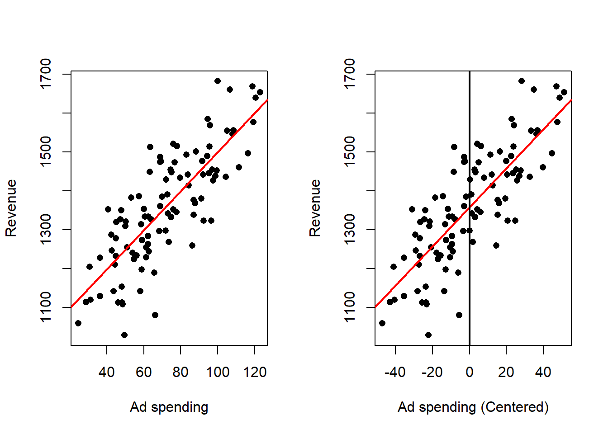
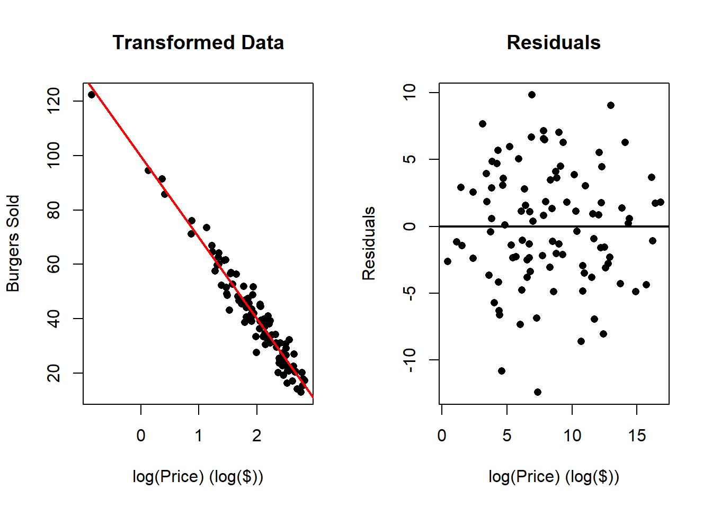

4 Simple Linear Regression
4.1 Intro to SLR
Simple linear regression (SLR) is a linear regression model with a single explanatory variable. It focuses on the linear relationship between one independent variable and one dependent variable, making it the most basic form of linear regression analysis.
4.1.1 A path not Taken
The basic idea behind linear regression is to find the “best line” that describes the data. This idea admits several interpretations. One interpretation is to measure the distance between a candidate line and the data points. For a line \(\mathcal{l}\) given by
\[ ax + by + c = 0 \]
the distance from a point \((x_i,y_i)\) to that line is
\[ d_i = d(\mathcal{l},(x_i,y_i)) = \frac{|ax_i + by_i + c|}{\sqrt{a^2+b^2}}. \]
We could then pose the optimization problem
\[ \min_{a,b,c} \sum_{i=1}^n d_i. \]
However, those familiar with regression will recognize that this is not the standard linear regression formulation. That does not make the distance-minimization problem unreasonable, only that its solution will generally differ from the usual linear regression solution.
Linear regression, as commonly defined, is a particular optimization choice made because of its convenient properties. In the next section we introduce a model that refines the notion of a “best line.”
4.1.2 SLR Model
The model for simple linear regression is as follows:
\[y_i = \beta_0 + \beta_1 x_i + e_i, \quad i\in\{1,\ldots,n\}\]
where:
- \(y_i\) represents the \(i\)-th observation of the dependent variable.
- \(x_i\) represents the \(i\)-th observation of the independent variable.
- \(e_i\) represents the \(i\)-th observation of the error term.
- \(\beta_0\) is the intercept of the linear model, or regression line.
- \(\beta_1\) is the slope of the linear model, or regression line.
- \(n\) is the number of observations for both variables.
Notice that in this framework, the error is not measuring the distance from the point to the regression line, but the vertical distance from the point to the regression line. Also, note that we are not making any assumptions about the error terms.
In the case of the wine example, we generated the data based on the following linear model:
\[y_i = 75 + 1.5 x_i + e_i \]
dat <- read.csv(file = "Wine Data.csv")
plot(x = dat$Glasses,
y = dat$Years,
xlab = "Avg. Glasses of Wine per Week",
ylab = "Life Expectancy (Years)")
abline(a = 75,
b = 1.5,
col = 'red',
lwd = 2)
abline(v = 0,
lwd = 2)
text(x = 0.25, y = 76, expression(beta[0] ~ "=75"))
text(x = 3.25, y = 79, expression(beta[1] ~ "=1.5"))
segments(x0 = c(2, 3),
x1 = c(3, 3),
y0 = c(78, 78),
y1 = c(78, 79.5),
lwd = 2,
col = 'blue')
In this case, the intercept \(\beta_0\) is meaningful, as it represents the expected number of years a person would live if they didn’t drink wine at all. However, depending on the data, the intercept may or may not have a meaningful interpretation. The slope \(\beta_1\) indicates that for each additional glass of wine consumed per week, our model predicts an increase of 1.5 years in life expectancy.
In practice, we rarely know the true regression line. Instead, it must be estimated from the data. The goal is to find the “best” line that fits the data, where “best” means the line that minimizes the sum of squared errors (SSE) between the observed values and the values predicted by the model.
4.1.3 Possible Optimization Problems
Other than minimizing the sum of squared errors (SSE), we can consider the following alternative optimization problems. Here \(e_i(\beta_0,\beta_1)=y_i-(\beta_0+\beta_1 x_i)\) denotes the residual.
4.1.3.1 Minimizing the Sum of Absolute Errors
\[ \min_{\beta_0, \beta_1} \sum_{i=1}^n |e_i(\beta_0, \beta_1)| \]
This L1 criterion is common in the machine-learning community and is more robust to outliers than the SSE. Laplace was among the first to investigate this approach when developing early methods for fitting lines to data.
4.1.3.2 Minimizing the Maximum Error
\[ \min_{\beta_0, \beta_1} \max_{i=1}^n |e_i(\beta_0, \beta_1)| \]
The minimax approach focuses on reducing the largest error and is appropriate when large errors can be catastrophic. Laplace also explored this formulation in his early work.
4.1.3.3 Minimizing the Sum of Squared Errors
\[ \min_{\beta_0, \beta_1} \sum_{i=1}^n e_i(\beta_0, \beta_1)^2 \]
This is the standard formulation in simple linear regression (the least squares criterion), introduced by Legendre and Gauss (apparently independently). It remains widely used because of its convenient properties (closed-form solution, computational ease, and optimality under Gaussian error assumptions), which we will analyze later.
4.2 Least Squares Estimation
As explained before, we want to minimize the SSE. Define
\[Q(\beta_0, \beta_1) = \sum_{i=1}^n (e_i(\beta_0, \beta_1))^2 = \sum_{i=1}^n (y_i - \beta_0 - \beta_1 x_i)^2 \]
Because Q is differentiable (in fact a convex quadratic), we find its minimum by setting the gradient to zero.
The solution to this minimization problem is given by:
\[ \hat{\beta}_1 = \frac{\sum_{i = 1}^n y_i x_i - n \bar{y} \bar{x}}{\sum_{i = 1}^n x_i^2 - n \bar{x}^2} \] \[ \hat{\beta_0} = \bar{y} - \hat{\beta}_1 \bar{x}\] where we use \(\hat{}\), to denote the specific critical point. And we have adopted the standard notation: \[\bar{x} = \frac{1}{n}\sum_{i}^n x_i\] and \[\bar{y} = \frac{1}{n}\sum_{i}^n y_i\]. It remains to see if this is indeed a minimum. One can check the second order conditions or argue the quadratic form of the problem only admits a minimum.
Derivation
We start with \(\beta_0\):
\[\begin{align*} \frac{\partial Q}{\partial \beta_0} &= \frac{\partial}{\partial \beta_0} \sum_{i=1}^n (y_i - \beta_0 - \beta_1 x_i)^2 & \text{def. } Q \\ &= \frac{\partial}{\partial \beta_0} \sum_{i=1}^n (y_i^2 + \beta_0^2 + \beta_1^2 x_i^2 - 2 \beta_0 y_i - 2 \beta_1 x_i y_i + 2 \beta_0 \beta_1 x_i) & \text{expanding square} \\ &= \sum_{i=1}^n \frac{\partial}{\partial \beta_0} (y_i^2 + \beta_0^2 + \beta_1^2 x_i^2 - 2 \beta_0 y_i - 2 \beta_1 x_i y_i + 2 \beta_0 \beta_1 x_i) & \text{linearity of derivative} \\ &= \sum_{i = 1}^n (2 \beta_0 - 2 y_i + 2 \beta_1 x_i) & \text{applying the derivative} \\ &= 2 \sum_{i = 1}^n \beta_0 - 2 \sum_{i = 1}^n y_i + 2 \beta_1 \sum_{i = 1}^n x_i & \text{linearity sum} \\ &= 2 \left( n \beta_0 - n \bar{y} + n \beta_1 \bar{x} \right) & \text{def. } \bar{y}, \text{def. } \bar{x} \\ \end{align*}\]
Then we have that:
\[\begin{align} \frac{\partial Q}{\partial \beta_0} = 0 &\iff -2 \left( n \beta_0 - n \bar{y} + n\beta_1 \bar{x} \right) = 0 \notag \\ &\iff \beta_0 = \bar{y} - \beta_1 \bar{x} \tag{1} \end{align}\]
And we can do a similar thing for \(\beta_1\):
\[\begin{align*} \frac{\partial Q}{\partial \beta_1} &= \frac{\partial}{\partial \beta_1} \sum_{i=1}^n (y_i - \beta_0 - \beta_1 x_i)^2 & \text{def. } Q \\ &= \sum_{i=1}^n \frac{\partial}{\partial \beta_1} (y_i - \beta_0 - \beta_1 x_i)^2 & \text{linwarity of derivative} \\ &= \sum_{i = 1}^n 2(y_i -\beta_0 - \beta_1 x_i)(-x_i) & \text{applying the derivative} \\ &= -2\sum_{i = 1}^n y_i x_i + 2 \beta_0 \sum_{i = 1}^n x_i + 2 \beta_1 \sum_{i = 1}^n x_i^2 & \text{linearity sum} \\ &= -2\sum_{i = 1}^n y_i x_i + 2 n \beta_0 \bar{x} + 2 \beta_1 \sum_{i = 1}^n x_i^2 & \text{def. } \bar{x} \\ \end{align*}\]
then:
\[\begin{align} \frac{\partial Q}{\partial \beta_1} = 0 &\iff -2\sum_{i = 1}^n y_i x_i + 2 n \beta_0 \bar{x} + 2 \beta_1 \sum_{i = 1}^n x_i^2 = 0 \notag \\ &\iff \sum_{i = 1}^n y_i x_i = n \beta_0 \bar{x} + \beta_1 \sum_{i = 1}^n x_i^2 \tag{2} \end{align}\]
Now, substituting (1) into (2) we have that
\[\begin{align*} \sum_{i = 1}^n y_i x_i &= n (\bar{y} - \beta_1 \bar{x}) \bar{x} + \beta_1 \sum_{i = 1}^n x_i^2 \\ &= n \bar{y} \bar{x} - n \beta_1 \bar{x}^2 + \beta_1 \sum_{i = 1}^n x_i^2 \\ &= n \bar{y} \bar{x} + \beta_1 \left( \sum_{i = 1}^n x_i^2 - n \bar{x}^2 \right) \end{align*}\]
Then,
\[ \beta_1 = \frac{\sum_{i = 1}^n y_i x_i - n \bar{y} \bar{x}}{\sum_{i = 1}^n x_i^2 - n \bar{x}^2} \]
so, the only critical point for \(Q(\beta_0,\beta_1)\) is when:
\[ \hat{\beta}_1 = \frac{\sum_{i = 1}^n y_i x_i - n \bar{y} \bar{x}}{\sum_{i = 1}^n x_i^2 - n \bar{x}^2} \] \[ \hat{\beta_0} = \bar{y} - \hat{\beta}_1 \bar{x}\]
Now, if we introduce the further notation for the sample variance and covariance:
\[ S^2_{xx} = \frac{1}{n-1} \sum_{i=1}^n (x_i - \bar{x})^2 \] \[ S_{xy} = \frac{1}{n-1} \sum_{i=1}^n (x_i - \bar{x})(y_i - \bar{y}) \]
and note that:
\[\sum_{i=1}^n (x_i - \bar{x})^2 = \sum_{i=1}^n x_i^2 - n\bar{x}^2 \]Derivation
\[\begin{align*} \frac{1}{n-1} \sum_{i=1}^n (x_i - \bar{x})^2 &= \frac{1}{n-1} \sum_{i=1}^n (x_i^2 - 2\bar{x}x_i + \bar{x}^2) & \text{exp. square} \\ &= \frac{1}{n-1} \left[ \sum_{i=1}^n x_i^2 - 2\bar{x}\sum_{i=1}^n x_i + \sum_{i=1}^n \bar{x}^2 \right] & \text{linearity sum} \\ &= \frac{1}{n-1} \left[ \sum_{i=1}^n x_i^2 - 2\bar{x}(n\bar{x}) + n \bar{x}^2 \right] & \text{def. } \bar{x} \\ &= \frac{1}{n-1} \left[ \sum_{i=1}^n x_i^2 - 2n\bar{x}^2 + n \bar{x}^2 \right] & \\ &= \frac{1}{n-1} \sum_{i=1}^n x_i^2 - n\bar{x}^2 & \\ \end{align*}\]
and
\[ \sum_{i=1}^n (x_i - \bar{x})(y_i - \bar{y}) = \sum_{i=1}^n x_iy_i - n\bar{x} \bar{y} \]Derivation
\[\begin{align*} \frac{1}{n-1} \sum_{i=1}^n (x_i - \bar{x})(y_i - \bar{y}) &= \frac{1}{n-1} \sum_{i=1}^n (x_iy_i - \bar{x}y_i - \bar{y}x_i + \bar{x}\bar{y}) & \text{exp. prod.} \\ &= \frac{1}{n-1} \left[ \sum_{i=1}^n x_iy_i - \bar{x} \sum_{i=1}^ny_i - \bar{y} \sum_{i=1}^n x_i + \sum_{i=1}^n \bar{x}\bar{y} \right] & \text{lin. sum} \\ &= \frac{1}{n-1} \left[ \sum_{i=1}^n x_iy_i - n\bar{x} \bar{y} - n\bar{y} \bar{x} + n \bar{x}\bar{y} \right] & \text{def. } \bar{y}, \bar{x} \\ &= \frac{1}{n-1} \left[ \sum_{i=1}^n x_iy_i - n\bar{x} \bar{y} \right] & \\ \end{align*}\]
Then we can express \(\hat{\beta}_1\) as:
\[\hat{\beta}_1 = \frac{(n-1)S_{xy}}{(n-1)S_{xx}^2}=\frac{S_{xy}}{S_{xx}} \]
Now notice that in order to find the Least Squares estimates you don’t require the complete data set, but only require the following quantities (Suffient Statistics):
- \(\bar{y}\).
- \(\bar{x}\).
- \(S_{xx}\).
- \(S_{xy}\).
4.2.1 Other estimated quantites
If we substitute the least-squares estimates into the regression model we obtain the fitted (predicted) values and residuals.
The fitted value for observation \(i\) is \[ \hat{y}_i = \hat{\beta}_0 + \hat{\beta}_1 x_i, \]
and the residual (estimated error) is \[ \hat{e}_i = y_i - \hat{y}_i = y_i - \hat{\beta}_0 - \hat{\beta}_1 x_i. \]
And we can also compare our estimated regression line (blue) with the real regression line (red) in the following as follows:
outReg <- lm(Years ~ Glasses, data = dat)
plot(x = dat$Glasses,
y = dat$Years,
xlab = "Avg. Glasses of Wine per Week",
ylab = "Life Expectancy (Years)")
abline(a = 75,
b = 1.5,
col = 'red',
lwd = 2)
abline(a = outReg$coefficients[1],
b = outReg$coefficients[2],
col = 'blue',
lwd = 2)
4.2.2 Properties of the SLR problem
The least-squares solution in simple linear regression (SLR) enjoys several important and useful properties that are not generally shared by minimax or least-absolute-value fits (even for the same linear model). Below is a concise, polished list of these properties with brief explanations.
Closed-form solution.
The normal equations yield explicit formulas (e.g. \(\hat\beta_1 = S_{xy}/S_{xx}\), \(\hat\beta_0=\bar y-\hat\beta_1\bar x\)). Closed-form expressions provide direct insight into how the estimates depend on the data.Computationally cheap (O(n)).
Only a few sums (or averages and second moments) are needed, so the estimates can be computed in linear time and with constant memory beyond the data summaries.Depends only on a few summary statistics (sufficient-type summaries).
The estimates require only \(\bar x,\bar y,S_{xx}^2,S_{xx}\)
4.3 Properties of the Estimates
Before analyzing more properties of the least squares problem, let us define the following variables:
- \(\mathbf{y} = (y_1,\ldots,y_n)'\).
- \(\mathbf{x} = (x_1,\ldots,x_n)'\).
- \(\mathbf{e} = (e_1,\ldots,e_n)'\).
- \(\hat{\mathbf{y}} = (\hat{y}_1,\ldots,\hat{y}_n)'\).
- \(\hat{\mathbf{e}} = (\hat{e}_1,\ldots,\hat{e}_n)'\).
- \(\mathbb{1} = (1,\ldots,1)'\).
As a bonus, we can write the Linear regression model as follows:
\[ \mathbf{y} = \beta_0 \mathbb{1} + \beta_1 \mathbf{x} + \mathbf{e} \]
4.3.1 \(\hat{\beta}_0\) and \(\hat{\beta}_1\) are linear combinations of
\(\mathbf{y}\)
The estimates \(\hat{\beta}_0\) and \(\hat{\beta}_1\) are linear combinations of \(\mathbf{y} = (y_1,\ldots,y_n)'\).
First note the following:
\[ \sum_{i=1}^n (x_i - \bar{x})(y_i - \bar{y}) = \sum_{i=1}^n (x_i - \bar{x}) y_i \]Derivation
\[\begin{align*} \sum_{i=1}^n (x_i - \bar{x})(y_i - \bar{y}) &= \sum_{i=1}^n x_i y_i - n \bar{x} \bar{y} & \text{dist. prod.} \\ &= \sum_{i=1}^n x_i y_i - \bar{x} \sum_{i=1}^n y_i & \text{def. } \bar{y} \\ &= \sum_{i=1}^n x_i y_i - \sum_{i=1}^n \bar{x} y_i & \text{liniarity of sum} \\ &= \sum_{i=1}^n (x_i y_i - \bar{x} y_i) & \text{ass. sum} \\ &= \sum_{i=1}^n (x_i - \bar{x}) y_i & \text{factoring } y_i \\ \end{align*}\]
Then
\[ \hat{\beta}_1 = \frac{\sum_{i = 1}^n (x_i - \bar{x})(y_i - \bar{y})}{\sum_{i=1}^n (x_i - \bar{x})^2} = \frac{\sum_{i=1}^n (x_i - \bar{x}) y_i}{\sum_{i=1}^n (x_i - \bar{x})^2} = \sum_{i=1}^n\frac{(x_i - \bar{x}) }{\sum_{i=1}^n (x_i - \bar{x})^2}y_i \]
and similarly:
\[ \hat{\beta}_0 = \bar{y} - \hat{\beta}_1 \bar{x} = \sum_{i=1}^n \frac{y_i}{n} - \sum_{i=1}^n\frac{(x_i - \bar{x}) }{\sum_{j = 1}^n x_j^2 - n \bar{x}^2}y_i \bar{x} = \sum_{i=1}^n \left( \frac{1}{n} - \frac{(x_i - \bar{x}) }{\sum_{j = 1}^n x_j^2 - n \bar{x}^2} \bar{x} \right)y_i \]
4.3.2 The sum of the residuals is \(0\)
That is:
\[ \sum_{i=1}^n \hat{e}_i = 0 \]
Derivation
\[\begin{align*} \sum_{i=1}^n \hat{e}_i &= \sum_{i=1}^n(y_i - \hat{\beta}_0 - \hat{\beta}_1 x_i) & \text{def. } \hat{\mathbf{e}}\\ &= \sum_{i=1}^n y_i - \sum_{i=1}^n \hat{\beta}_0 - \hat{\beta}_1 \sum_{i=1}^n x_i & \text{linearity sum} \\ &= n\bar{y} - n \hat{\beta}_0 - n \hat{\beta}_1 \bar{x} & \\ &= n\bar{y} - n (\bar{y} - \hat{\beta}_1 \bar{x}) - n \hat{\beta}_1 \bar{x} & \text{def. } \hat{\beta}_0 \\ &= n\bar{y} - n \bar{y} + n \hat{\beta}_1 \bar{x} - n \hat{\beta}_1 \bar{x} & \text{dist.} n \\ &= 0 \end{align*}\]
4.3.3 \(\hat{\mathbf{e}}\) and \(\mathbf{x}\) are orthogonal
We need to show that:
\[ \langle \hat{\mathbf{e}}, \mathbf{x}\rangle = 0 \]
Derivation
\[\begin{align*} \langle \hat{\mathbf{e}}, \mathbf{x}\rangle &= \sum_{i=1}^{n} \hat{e}_i x_i & \text{def. dot prod.} \\ &= \sum_{i=1}^{n} (y_i - \hat{\beta}_0 - \hat{\beta}_1 x_i)x_i & \text{def. } \hat{e}_i \\ &= \sum_{i=1}^{n} (y_i x_i - \hat{\beta}_0x_i - \hat{\beta}_1 x_i x_i) & \text{dist. } x_i \\ &= \sum_{i=1}^{n} y_i x_i - \hat{\beta}_0 \sum_{i=1}^{n} x_i - \hat{\beta}_1 \sum_{i=1}^{n} x_i x_i & \text{linearity sum} \\ &= \sum_{i=1}^{n} y_i x_i - n \hat{\beta}_0 \bar{x} - \hat{\beta}_1 \sum_{i=1}^{n} x_i^2 & \text{def. } \bar{x} \\ &= \sum_{i=1}^{n} y_i x_i - n (\bar{y} - \hat{\beta}_1 \bar{x}) \bar{x} - \hat{\beta}_1 \sum_{i=1}^{n} x_i^2 & \text{def. } \hat{\beta}_0 \\ &= \sum_{i=1}^{n} y_i x_i - n \bar{y} \bar{x} + n\hat{\beta}_1 \bar{x}^2 - \hat{\beta}_1 \sum_{i=1}^{n} x_i^2 & \text{dist. } \bar{x} \\ &= \sum_{i=1}^{n} y_i x_i - n \bar{y} \bar{x} - \hat{\beta}_1 (\sum_{i=1}^{n} x_i^2 - n\bar{x}^2) & \text{fact. } \hat{\beta}_1 \\ &= \sum_{i=1}^{n} y_i x_i - n \bar{y} \bar{x} - \frac{\sum_{i = 1}^n y_i x_i - n \bar{y} \bar{x}}{\sum_{i = 1}^n x_i^2 - n \bar{x}^2}(\sum_{i=1}^{n} x_i^2 - n\bar{x}^2) & \text{def. } \hat{\beta}_1 \\ &= \sum_{i=1}^{n} y_i x_i - n \bar{y} \bar{x} - (\sum_{i = 1}^n y_i x_i - n \bar{y} \bar{x}) \\ &=0 \end{align*}\]
4.3.4 \(\hat{\mathbf{y}}\) and \(\hat{\mathbf{e}}\) are orthogonal
We need to show that:
\[ \langle \hat{\mathbf{e}}, \hat{\mathbf{y}}\rangle = 0 \]
Derivation
\[\begin{align*} \langle \hat{\mathbf{e}}, \hat{\mathbf{y}}\rangle &= \sum_{i=1}^{n} \hat{e}_i \hat{y}_i & \text{def. dot prod.} \\ &= \sum_{i=1}^{n} \hat{e}_i(\hat{\beta}_0 + \hat{\beta}_1 x_i) & \text{def. } \hat{y}_i \\ &= \sum_{i=1}^{n} (\hat{e}_i \hat{\beta}_0 + \hat{e}_i \hat{\beta}_1 x_i) & \text{dist. } \hat{e}_i \\ &= \hat{\beta}_0 \sum_{i=1}^{n} \hat{e}_i + \hat{\beta}_1 \sum_{i=1}^{n} \hat{e}_i x_i & \text{lin. sum } \\ &= \hat{\beta}_1 \sum_{i=1}^{n} \hat{e}_i x_i & \sum_{i=1}^{n} \hat{e}_i = 0\\ &= \hat{\beta}_1 \langle \hat{\mathbf{e}}, \mathbf{x}\rangle & \text{def. dot prod.}\\ &= 0 & \langle \hat{\mathbf{e}}, \mathbf{x}\rangle = 0 \\ \end{align*}\]
4.3.5 The average of \(\hat{\mathbf{y}}\) and \(\mathbf{y}\) are the same
That is:
\[ \frac{1}{n} \sum_{i=1}^n \hat{y}_i = \bar{y} \]Derivation
\[\begin{align*} \frac{1}{n} \sum_{i=1}^n \hat{y}_i &= \frac{1}{n} \sum_{i=1}^n (\hat{\beta}_0 + \hat{\beta}_1 x_i) & \text{def. } \hat{y}_i \\ &= \frac{1}{n} (n \hat{\beta}_0 + \hat{\beta}_1 \sum_{i=1}^n x_i) & \text{dist. sum} \\ &= \frac{1}{n} (n \hat{\beta}_0 + n \hat{\beta}_1 \mathbf{x}) & \text{dist. } n \\ &= \hat{\beta}_0 + \hat{\beta}_1 \mathbf{x} & \text{def. } \hat{\beta}_0 \\ &= \bar{y} - \hat{\beta}_1 \mathbf{x}+ \hat{\beta}_1 \mathbf{x}\\ & \\ &= \bar{y} \\ & \\ \end{align*}\]
All these properties of the estimates, are the result of solving the least squares problem. If another problem is solve, several of these properties, if not all of them, will be lost.
4.4 Centering and Standarizing the Data
Some transformations of the data can aid regression analysis or make coefficient interpretations more intuitive. Two standard linear transformations are centering and standardization. Before discussing their implications for linear regression, we define each transformation and analyze its effect on the data itself.
Definition 4.1 (Centered variable) Given observations \(\{x_i\}_{i=1}^n\), then the centered version of observation \(i\), denoted by \(x_i^c\) is given by: \[x_i^c = x_i - \bar{x}\]
Proposition 4.1 The centered observations \(\{x_i^c\}_{i=1}^n\) have mean \(0\).
Proof
Proof. We need to show that: \[ \bar{x}^c = 0 \]
\[\begin{align*} \bar{x}^c &= \frac{1}{n} \sum_{i=1}^n x_i^c & \text{def. } \bar{x}^c \\ &= \frac{1}{n} \sum_{i=1}^n (x_i - \bar{x}) & \text{def. } x_i^c \\ &= \frac{1}{n} \left(\sum_{i=1}^n x_i - \sum_{i=1}^n \bar{x} \right) & \text{lin. sum} x_i^c \\ &= \frac{1}{n} \left(n\bar{x} - n \bar{x} \right) & \text{def. } \bar{x} \\ &= 0 \\ & \\ \end{align*}\]
Proposition 4.2 The centered observations \(\{x_i^c\}_{i=1}^n\) have the same sample variance as the original observations \(\{x_i\}_{i=1}^n\).
Proof
Proof. We need to show that: \[ S_{xx}^c = S_{xx} \]
\[\begin{align*} S_{xx}^c &= \frac{1}{n-1} \sum_{i=1}^n (x_i^c - \bar{x}^c)^2 & \text{def. } S_{xx}^c \\ &= \frac{1}{n-1} \sum_{i=1}^n (x_i^c)^2 & \bar{x}^c = 0 \\ &= \frac{1}{n-1} \sum_{i=1}^n (x_i - \bar{x})^2 & \text{def. } x_i^c \\ &= S_{xx} & \text{def. } S_{xx} \\ \end{align*}\]
Proposition 4.3 The centered observations \(\{x_i^c\}_{i=1}^n\) and \(\{y_i^c\}_{i=1}^n\) have the same sample covariance as the original observations \(\{x_i\}_{i=1}^n\) and \(\{y_i\}_{i=1}^n\).
Proof
Proof. We need to show that: \[ S_{xy}^c = S_{xy} \]
\[\begin{align*} S_{xy}^c &= \frac{1}{n-1} \sum_{i=1}^n (x_i^c - \bar{x})(y_i^c - \bar{y}) & \text{def. } S_{xy}^c \\ &= \frac{1}{n-1} \sum_{i=1}^n (x_i^c)(y_i^c) & \bar{x}^c = 0,\bar{y}^c = 0 \\ &= \frac{1}{n-1} \sum_{i=1}^n (x_i - \bar{x})(y_i - \bar{y}) & \text{def. } x_i^c,y_i^c \\ &= S_{xy} & \text{def. } S_{xy} \\ \end{align*}\]
Effect on the data:
- Location: The mean of the centered variable is zero. Centering moves the distribution so that its central point is at the origin.
- Spread and shape: Centering does not change the spread (variance or standard deviation) or the shape (skewness/kurtosis) of the distribution; only the location changes.
- Units and interpretation: Units remain the same; only the zero point is shifted.
- Linear relationships: Pairwise linear relationships are unchanged in magnitude.
- Numerical effects: Centering often reduces the magnitude of numerical values and can improve numerical stability in computations.
Definition 4.2 (Standarized variable) Given observations \(\{x_i\}_{i=1}^n\), then the standarized version of observation \(i\), denoted by \(x_i^s\), is given by: \[x_i^s = \frac{x_i - \bar{x}}{\sqrt{S_{xx}}} = \frac{x_i^c}{\sqrt{S_{xx}}}\]
Proposition 4.4 The standardized observations \(\{x_i^s\}_{i=1}^n\) have mean of \(0\) and variance \(1\).
Proof
Proof. We need to show that: \[ \bar{x}^s = 0 \] and \[ S_{xx}^s = 1 \]
First, let us show that \(\bar{x}^s = 0\). \[\begin{align*} \bar{x}^s = 0 &= \frac{1}{n} \sum_{i=1}^n x_i^c & \text{def. } \bar{x}^s \\ &= \frac{1}{n} \sum_{i=1}^n \frac{x_i^c}{\sqrt{S_{xx}}} & \text{def. } x_i^s \\ &= \frac{1}{\sqrt{S_{xx}}}\frac{1}{n} \sum_{i=1}^n x_i^c & \text{lin. sum} \\ &= \frac{1}{\sqrt{S_{xx}}} \bar{x}^c & \text{def. } \bar{x}^c \\ &= 0 & \bar{x}^c = 0 \\ \end{align*}\]
Now let us see that the variance of the standardized observations is 1. \[\begin{align*} S_{xx}^s &= \frac{1}{n-1} \sum_{i=1}^n (x_i^s - \bar{x}^s)^2 & \text{def. } S_{xx}^s \\ &= \frac{1}{n-1} \sum_{i=1}^n (x_i^s)^2 & \bar{x}^s = 0 \\ &= \frac{1}{n-1} \sum_{i=1}^n \left(\frac{x_i - \bar{x}}{\sqrt{S_{xx}}}\right)^2 & \text{def. } x_i^s \\ &= \frac{1}{n-1} \sum_{i=1}^n \frac{(x_i - \bar{x})^2}{S_{xx}} & \\ &= \frac{1}{S_{xx}} \frac{1}{n-1} \sum_{i=1}^n (x_i - \bar{x})^2 & \text{lin. sum} \\ &= \frac{1}{S_{xx}}S_{xx} & \text{def. } S_{xx} \\ &= 1 & \\ \end{align*}\]
Effect on the data:
- Location and scale: The standardized variable has mean zero and a typical magnitude of one.
- Units: Units are removed; values are expressed in “standard‑deviation units” relative to the original scale.
- Shape: The shape of the distribution (skewness, kurtosis) is unchanged; only location and scale are affected.
- Comparability: Variables measured on different original scales become directly comparable after standardization, because they share a common scale.
- Sensitivity to outliers: The standardization factor is sensitive to extreme values if the sample standard deviation is used; robust alternatives (median and robust spread) can be substituted when outliers are a concern.
4.4.1 Remarks on Centering and Standarization
- Standardization implies centering. Every standardized variable is centered; the converse need not hold.
- Both operations are linear transformations: they preserve linear relationships among variables and do not change correlation signs, though numeric slope values will change according to scale.
- Centering is often sufficient when the goal is to simplify interpretation of an intercept or reduce collinearity with polynomial or interaction terms.
- Standardization is recommended when predictors have different units or scales, when comparing effect sizes, or when using algorithms or penalties that depend on predictor scale.
- When applying transformations in modeling workflows, compute centering/standardization parameters (means and spread measures) on the training data and apply the same transformations to validation and test sets to avoid data leakage.
- Record and report the transformations so coefficients and predictions can be interpreted or converted back to original units when needed.
4.4.2 Summary Centering and Standarizing
- Centering shifts a variable so its mean is zero; it changes location only and leaves spread and shape intact.
- Standardization shifts and rescales so that the variable has mean zero and unit typical magnitude; it removes units and facilitates comparability.
- Both are linear, preserve linear association, and are valuable preprocessing steps; the choice between them depends on interpretive goals, numerical stability needs, and sensitivity to outliers.
Now, let us introduce the sample correlation.
Definition 4.3 (Sample Correlation) Given observations \(\{x_i\}_{i=1}^n\) and \(\{y_i\}_{i=1}^n\), the sample correlation is given by: \[ r_{xy} = \frac{S_{xy}}{\sqrt{S_{xx}{S_{yy}}}} \]
Proposition 4.5 The sample covariance of the standardized observations \(\{x_i^s\}_{i=1}^n\) and \(\{x_i^s\}_{i=1}^n\) is equal to the correlation of the original observations \(\{x_i\}_{i=1}^n\) and \(\{x_i\}_{i=1}^n\)
Proof
Proof. \[\begin{align*} S_{xy}^s &= \frac{1}{n-1} \sum_{i=1} (x_i^s - \bar{x}^s)(y_i^s - \bar{x}^s) & \text{def. } S_{xx}^s \\ &= \frac{1}{n-1} \sum_{i=1} (x_i^s)(y_i^s) & \bar{x}^s=0,\bar{y}^s=0 \\ &= \frac{1}{n-1} \sum_{i=1} \left(\frac{x_i - \bar{x}}{\sqrt{S_{xx}}}\right) \left(\frac{y_i - \bar{y}}{\sqrt{S_{yy}}}\right) & \text{def. } x^c_i,y^c_i \\ &= \frac{1}{\sqrt{S_{yy}}\sqrt{S_{xx}}}\frac{1}{n-1} \sum_{i=1} (x_i - \bar{x}) (y_i - \bar{y}) & \text{lin. sum} \\ &= \frac{1}{\sqrt{S_{yy}}\sqrt{S_{xx}}} S_{xy} & \text{def. } S_{xy} \\ &= r_{xy} & \text{def. } r_{xy} \\ \end{align*}\]
With this results, we can analyze the effects of the following 3 scenarios on the estimated coefficients:
- Independent variable centered.
- Both, independent and dependent variable centered.
- Both, independent and dependent variable standardized.
4.5 Centering and Standarizing in SLR
Centering and standardizing are two common preprocessing steps for continuous variables before fitting a regression model. They are simple linear transformations of the data but have important practical and interpretive consequences.
4.5.1 Centered Independent Variable
Proposition 4.6 The LS estimators \(\hat{\beta}^c_0, \hat{\beta}^c_1\) with centered independent variables \(\{x_i^c\}_{i=1}^n\) and original dependent variables \(\{y_i\}_{i=1}^n\) can be expressed in terms of the original estimators and data as follows: \[\hat{\beta}_1^c = \hat{\beta}_1\] and \[\hat{\beta}_0^c = \bar{y}\]
Proof
Proof. First lets compute \(\beta_1^c\) \[\begin{align*} \hat{\beta}_1^c &= \frac{S_{xy}^c}{S_{xx}^c} & \text{def. } \hat{\beta}_1^c \\ &= \frac{S_{xy}}{S_{xx}} & S_{xy}^c=S_{xy},S_{xx}^c=S_{xx}\\ &= \hat{\beta}_1 \end{align*}\] and \[\begin{align*} \hat{\beta}_0^c &= \bar{y} - \hat{\beta}_^c \bar{x}^c & \text{def. } \hat{\beta}_0^c \\ &= \bar{y} - \hat{\beta}_1^c 0 & \bar{x}^c=0 \\ &= \bar{y} \end{align*}\]
So centering the dependent variable doesn’t change the value of the estimated slope and makes the estimated intercept to coincide with the mean of the independent variable.
We can see this in one of our example data sets, looking at the ad spending data we can perform linear regression on the original data and the centered data:
# Read Data
dat <- read.csv("Ad spending Data.csv")
# Assign data
x <- dat$Ad.Spending
y <- dat$Revenue
# Centers x
xCen <- x - mean(x)
# Linear regression on the original data
outRegOri <- lm(y ~ x)
# Linear regression on the centered data
outRegCen <- lm(y ~ xCen)
## Two plots in the same image
par(mfrow = c(1, 2))
## Original data
# Plots the points
plot(x = x,
y = y,
xlab = "Ad spending",
ylab = "Revenue",
pch = 16)
# Plots the regression line
abline(a = outRegOri$coefficients[1],
b = outRegOri$coefficients[2],
col = 'red',
lwd = 2)
## Independent Variable centered data
# Plots the points
plot(x = xCen,
y = y,
xlab = "Ad spending (Centered)",
ylab = "Revenue",
pch = 16)
# Plots the regression line
abline(a = outRegCen$coefficients[1],
b = outRegCen$coefficients[2],
col = 'red',
lwd = 2)
abline(v = 0,
lwd = 2)
Effect on the fitted model:
- The estimated slope that measures how the response changes with the predictor is unchanged in magnitude.
- The intercept becomes the predicted response at the typical predictor value (the predictor average), which makes the intercept directly interpretable as a typical outcome.
- Predictions for any observation are unchanged after converting back to the original predictor scale.
Statistical and numerical consequences:
- The sampling variability of the slope estimator is unaffected.
- Centering often improves numerical stability in computation because predictor values are closer to zero, reducing the chance of poor conditioning or round-off error.
Practical considerations:
- Centering is especially useful when the intercept at an observed or typical
predictor value is of substantive interest.
- It is recommended when polynomial terms or interactions are present, because it reduces collinearity between lower- and higher-order terms.
- Always record the predictor mean used for centering so that future predictions or reporting can be done on the original scale.
4.5.2 Both Variables Centered
Proposition 4.7 The LS estimators \(\hat{\beta}^c_0, \hat{\beta}^c_1\) with centered independent variables \(\{x_i^c\}_{i=1}^n\) and centered dependent variables \(\{y_i^c\}_{i=1}^n\) can be expressed in terms of the original estimators and data as follows: \[\hat{\beta}_1^c = \hat{\beta}_1\] and \[\hat{\beta}_0^c = 0\]
Proof
Proof. First lets compute \(\beta_1^c\) \[\begin{align*} \hat{\beta}_1^c &= \frac{S_{xy}^c}{S_{xx}^c} & \text{def. } \hat{\beta}_1^c \\ &= \frac{S_{xy}}{S_{xx}} & S_{xy}^c=S_{xy},S_{xx}^c=S_{xx}\\ &= \hat{\beta}_1 \end{align*}\] and \[\begin{align*} \hat{\beta}_0^c &= \bar{y}^c - \hat{\beta}_1^c \bar{x}^c & \text{def. } \hat{\beta}_0^c \\ &= 0 - \hat{\beta}_1^c 0 & \bar{x}^c=\bar{y}^c=0 \\ &= 0 \end{align*}\]
Again, the slope doesn’t change while the estimate of the intercept becomes zero (the new mean of the centered dependent variable).
The effect of this transformation can be observed, in the following example:
# Read Data
dat <- read.csv("Ad spending Data.csv")
# Assign data
x <- dat$Ad.Spending
y <- dat$Revenue
# Centers x and y
xCen <- x - mean(x)
yCen <- y - mean(y)
# Linear regression on the original data
outRegOri <- lm(y ~ x)
# Linear regression on the centered data
outRegCen <- lm(yCen ~ xCen)
# Plots
## Two plots in the same image
par(mfrow = c(1, 2))
## Original data
# Plots the points
plot(x = x,
y = y,
xlab = "Ad spending",
ylab = "Revenue",
pch = 16)
# Plots the regression line
abline(a = outRegOri$coefficients[1],
b = outRegOri$coefficients[2],
col = 'red',
lwd = 2,
pch = 16)
## Centered data
# Plots the points
plot(x = xCen,
y = yCen,
xlab = "Ad spending (Centered)",
ylab = "Revenue",
pch = 16)
# Plots the regression line
abline(a = outRegCen$coefficients[1],
b = outRegCen$coefficients[2],
col = 'red',
lwd = 2)
abline(v = 0,
lwd = 2)
abline(h = 0,
lwd = 2)
Effect on the fitted model
- The fitted line passes through the origin in the centered coordinate system, so there is no separate intercept to estimate in the transformed model.
- The estimated slope remains the same numerical quantity as in the original regression fitted to deviations; the relationship described by the slope is identical to the original slope.
Inference and numerical consequences
- There is no intercept estimate to interpret in the centered model, and the slope is naturally interpreted as how deviations in the response correspond to deviations in the predictor.
- Because centering reduces magnitudes, numerical conditioning and stability often improve.
Practical considerations:
- Centering both variables is useful when the research question is framed in terms of deviations from typical values (for example, “how much above or below average does the response change when the predictor is above or below average?”).
- It simplifies algebraic decompositions of variance and can make interpretation of component sums of squares more direct.
- Keep the centering constants so that any transformations of predictions or coefficients back to original units are straightforward.
4.5.3 Both variables Standarized
Finally, we analyze the effect of standardization.
Proposition 4.8 The LS estimators \(\hat{\beta}^s_0, \hat{\beta}^s_1\) with standardized independent variables \(\{x_i^c\}_{i=1}^n\) and standardized dependent variables \(\{y_i^c\}_{i=1}^n\) can be expressed in terms of the original variables as follows: \[\hat{\beta}_1^s = r_{xy}\] and \[\hat{\beta}_0^s = 0\]
Proof
Proof. First lets compute \(\beta_1^c\) \[\begin{align*} \hat{\beta}_1^s &= \frac{S_{xy}^s}{S_{xx}^s} & \text{def. } \hat{\beta}_1^s \\ &= \frac{r_{xy}}{1} & S_{xy}^s=r_{xy},S_{xx}^s=1\\ &= r_{xy} \end{align*}\] and \[\begin{align*} \hat{\beta}_0^s &= \bar{y}^s - \hat{\beta}_1^s \bar{x}^s & \text{def. } \hat{\beta}_0^s \\ &= 0 - \hat{\beta}_1^s 0 & \bar{x}^s=\bar{y}^s=0 \\ &= 0 \end{align*}\]
So, the estimate of the slope is the sample correlation of the original observations.
Again, we can see this graphically:
# Read Data
dat <- read.csv("Ad spending Data.csv")
# Assign data
x <- dat$Ad.Spending
y <- dat$Revenue
# Standardizes x and y
xSta <- (x - mean(x))/sqrt(var(x))
ySta <- (y - mean(y))/sqrt(var(y))
# Linear regression on the original data
outRegOri <- lm(y ~ x)
# Linear regression on the standard data
outRegSta <- lm(ySta ~ xSta)
# Plots
## Two plots in the same image
par(mfrow = c(1, 2))
## Original data
# Plots the points
plot(x = x,
y = y,
xlab = "Ad spending",
ylab = "Revenue",
pch = 16)
# Plots the regression line
abline(a = outRegOri$coefficients[1],
b = outRegOri$coefficients[2],
col = 'red',
lwd = 2)
## Standard data
# Plots the points
plot(x = xSta,
y = ySta,
xlab = "Ad spending (Centered)",
ylab = "Revenue",
pch = 16)
# Plots the regression line
abline(a = outRegSta$coefficients[1],
b = outRegSta$coefficients[2],
col = 'red',
lwd = 2)
abline(v = 0,
lwd = 2)
abline(h = 0,
lwd = 2)
finally, we show that the sample correlation is between \(-1\) and \(1\).
Proposition 4.9 The sample correlation \(r_{xy}\) lies in \([-1,1]\).
Proof
Proof. First let us show that \(\frac{1}{n-1} \sum_{i=1}^n (x_i^s + y_i^s)^2=2(1 + r_{xy})\) \[\begin{align*} \frac{\sum_{i=1}^n (x_i^s + y_i^s)^2}{n-1} &= \frac{1}{n-1} \sum_{i=1}^n \left((x_i^s)^2 + 2x_i^s y_i^s + (y_i^s)^2 \right) & \\ &= \frac{\sum_{i=1}^n (x_i^s)^2}{n-1} + 2\frac{\sum_{i=1}^n x_i^sy_i^s}{n-1} + \frac{\sum_{i=1}^n (y_i^s)^2}{n-1} & \text{lin. sum} \\ &= \frac{\sum_{i=1}^n (x_i^s - \bar{x}^s)^2}{n-1} + 2\frac{\sum_{i=1}^n (x_i^s - \bar{x}^s)(y_i^s - \bar{y}^s)}{n-1} & \\ &\quad + \frac{\sum_{i=1}^n (y_i^s - \bar{y}^s)^2}{n-1} & \bar{x}^s=\bar{y}^s=0 \\ &= S_{xx}^2 + 2 S_{xy}^s + S_{yy}^s & \text{def. } S_{xx}^2,S_{xy}^s,S_{yy}^s \\ &= 1 + 2r_{xy} + 1 & S_{xy}^s=r_{xy} \\ &= 2(1 + r_{xy}) & \\ \end{align*}\] similarly, it can be shown that \(\frac{1}{n-1} \sum_{i=1}^n (x_i^s - y_i^s)^2=2(1 - r_{xy})\) \[\begin{align*} \frac{\sum_{i=1}^n (x_i^s - y_i^s)^2}{n-1} &= \frac{1}{n-1} \sum_{i=1}^n \left((x_i^s)^2 - 2x_i^s y_i^s + (y_i^s)^2 \right) & \\ &= \frac{\sum_{i=1}^n (x_i^s)^2}{n-1} - 2\frac{\sum_{i=1}^n x_i^sy_i^s}{n-1} + \frac{\sum_{i=1}^n (y_i^s)^2}{n-1} & \text{lin. sum} \\ &= \frac{\sum_{i=1}^n (x_i^s - \bar{x}^s)^2}{n-1} - 2\frac{\sum_{i=1}^n (x_i^s - \bar{x}^s)(y_i^s - \bar{y}^s)}{n-1} & \\ &\quad + \frac{\sum_{i=1}^n (y_i^s - \bar{y}^s)^2}{n-1} & \bar{x}^s=\bar{y}^s=0 \\ &= S_{xx}^2 - 2 S_{xy}^s + S_{yy}^s & \text{def. } S_{xx}^2,S_{xy}^s,S_{yy}^s \\ &= 1 - 2r_{xy} + 1 & S_{xy}^s=r_{xy} \\ &= 2(1 - r_{xy}) & \\ \end{align*}\] Now since, \[\frac{1}{n-1} \sum_{i=1}^n (x_i^s + y_i^s)^2, \frac{1}{n-1} \sum_{i=1}^n (x_i^s - y_i^s)^2 \geq 0\] then \[2(1 + r_{xy}) \geq 0 => r_{xy} \geq -1\] and \[2(1 - r_{xy}) \geq 0 => r_{xy} \leq 1\] Then \[ -1 \leq r_{xy} \leq 1 \]
which implies that the slope of the regression analysis after standarizing both variables is going to be in the interval \((-1, 1)\).
Effect on the fitted model:
- The model has no intercept in the standardized coordinates; the estimated slope is unitless and expresses change in the response in standard‑deviation units per one standard‑deviation change in the predictor.
- In the simple linear setting, the standardized slope equals the correlation between predictor and response; its squared value equals the proportion of variance explained by the predictor, as we will see in the next section.
Numerical consequences:
- Standardization often improves numerical conditioning and is recommended before applying algorithms or regularization methods that are sensitive to variable scale.
Practical considerations:
- Standard errors and any inferential statements refer to the transformed units; translating results back to original units requires reversing the standardization.
- Standardize when you need unitless effect sizes or when preparing inputs for penalized regression or gradient-based optimization.
- Be mindful of outliers: standardization using a classical spread measure can be heavily influenced by extreme values; consider robust scaling if outliers are a concern.
- Save the centering and scaling constants from the training data to apply the same transformation to new observations and to allow conversion of results back to original units for presentation.
4.5.4 Summary of Centering and Standarizing in SLR
- Center the predictor when you want a meaningful intercept.
- Centering is a minimal, low‑risk transformation useful in many settings.
- Center both variables when the focus is on deviations from typical values or when simplifying variance decomposition is helpful.
- Standardize both variables when you want unitless, comparable coefficients or when scale sensitivity of algorithms or penalties is a concern.
- In all cases, transformations do not change the underlying linear relationship or predictive performance (once predictions are transformed back), but they change numerical values and interpretation of coefficients. Always document and retain the transformation constants computed from the training sample to ensure valid application to new data and correct interpretation of results.
4.6 Coefficient of Determination
So far we have focused on finding the “best” line by estimating the coefficients that minimize the sum of squared errors. We have derived the least‑squares estimates, obtained fitted values and residuals, and discussed some algebraic properties of those estimates. What remains is to evaluate how well the fitted line captures the variability in the response. The principal summary measure for this purpose in linear regression is the coefficient of determination. Before defining it, we introduce a few standard quantities that decompose the total variability of the response.
Definition 4.4 (Total Sum of Squares) The Total Sum of Squares is given by: \[SS_{tot} = \sum_{i=1}^n (y_i - \bar{y})\]
The Total Sum of Squares is the fundamental measure of the total variability present in the observed responses. It quantifies how much the individual response values deviate, collectively, from their overall average. In other words, it is the baseline amount of variation in the dependent variable before any predictor information is used. You can think of it in several ways:
- As a proxy for uncertainty. The larger this quantity, the greater the uncertainty in the dependent variable.
- It is proportional to the sample variance.
- It is what you obtain when solving the following minimization problem:
\[ \min_{\beta_0} \sum_{i=1}^n (y_i - \beta_0)^2, \]
that is, the best possible sum of squared errors when no information from the independent variables \(x_1,\ldots,x_n\) is available.
Definition 4.5 (Residual Sum of Squares) The Residual Sum of Squares is given by: \[ SS_{res} = \sum_{i=1}^n(\hat{e}_i)^2 = \sum_{i=1}^n(y_i - \hat{y}_i)^2\]
The Residual Sum of Squares (RSS) is the aggregate measure of the discrepancies between observed responses and the responses predicted by a fitted regression model. Concretely, it sums the squared prediction errors (residuals) across all observations and therefore quantifies the total unexplained variation left after fitting the model.
Interpretation:
- Unexplained variability: RSS represents the portion of the data’s variability that the model does not capture. A smaller RSS indicates that the model’s predictions are closer to the observed values and that less variability remains unexplained.
- Measure of fit error: RSS is a direct summary of model misspecification and random noise as reflected in the residuals; it expresses how far, in aggregate, observed outcomes stray from the fitted line.
Key properties:
- Nonnegative and additive: RSS cannot be negative, and it increases when residuals grow larger in magnitude.
- Minimization target: In ordinary least squares, the fitted coefficients are chosen to minimize RSS; thus RSS at the fitted coefficients is the smallest possible sum of squared residuals for the chosen model form.
- Basis for variance estimation: RSS underlies the standard estimate of the model’s error variance, after accounting for the loss of degrees of freedom due to parameter estimation.
Role in regression analysis:
- Diagnostic and evaluation metric: RSS is used together with total variability to compute proportions of variance explained and other fit measures. It is central to testing whether predictors provide a meaningful improvement over a simpler model and to constructing confidence intervals and prediction intervals.
- Guide to improvement: Large RSS relative to total variability suggests the model is missing important structure or that noise is substantial; small RSS suggests good in‑sample fit (but not necessarily good out‑of‑sample performance).
Practical notes:
- Dependence on scale and sample size: RSS depends on the units of the response and on the number of observations, so it is most useful in relative comparisons (e.g., between models on the same dataset) rather than as an absolute measure across datasets.
- Use with diagnostics: Interpreting RSS should be accompanied by residual diagnostics and validation checks to ensure a low RSS reflects genuine explanatory power rather than overfitting or violated assumptions.
Definition 4.6 (Explained Sum of Squares) The Explained Sum of Squares is given by: \[ SS_{reg} = \sum_{i=1}^n(\hat{y}_i - \bar{y}) = \sum_{i=1}^n(\hat{y}_i - \hat{\bar{y}}) \]
The Explained Sum of Squares is the portion of the total variability in the dependent variable that is accounted for by the fitted regression model. It quantifies how much of the variation in the observed responses is captured by the model’s fitted values, as compared with using only a single constant (the sample mean).
Interpretation:
- It measures the improvement in fit achieved by the regression line relative to the baseline of predicting the mean for every observation.
- A larger explained sum of squares indicates that the model captures more of the systematic variation in the response and thus provides a better summary of the relationship between predictor and response.
Key properties:
- Nonnegative: it cannot be negative, because the fitted model cannot explain less variation than the baseline in a least‑squares fit.
- Bounded above by the total variability: the explained portion cannot exceed the total variability present in the data, we will see this next.
- Basis for fit measures: it is the numerator in the fraction that expresses the proportion of variance explained by the model, and it plays a central role in analysis of variance decompositions and in F‑tests comparing nested models.
- Sensitive to model choice: adding predictors or model flexibility can increase the explained sum of squares, which is why measures that penalize complexity are sometimes used when comparing models.
Proposition 4.10 (Sum of Squares Decomposition) The \(SS_{tot}\), \(SS_{res}\) and \(SS_{reg}\) are related by the following identity: \[ SS_{tot} = SS_{reg} + SS_{res} \]
Proof
Proof. \[\begin{align*} SS_{tot} &= \sum_{i=1}^n(y_i - \bar{y})^2 & \text{def. } SS_{tot} \\ &= \sum_{i=1}^n(y_i - \hat{y}_i + \hat{y}_i - \bar{y})^2 & \text{add } (0=- \hat{y}_i + \hat{y}_i) \\ &= \sum_{i=1}^n\left((y_i - \hat{y}_i)^2 + 2(y_i - \hat{y}_i)(\hat{y}_i - \bar{y}) + (\hat{y}_i - \bar{y})^2\right) & \\ &= \sum_{i=1}^n(y_i - \hat{y}_i)^2 + 2 \sum_{i=1}^n(y_i - \hat{y}_i)(\hat{y}_i - \bar{y}) + \sum_{i=1}^n(\hat{y}_i - \bar{y})^2 & \text{lin. sum} \\ &= SS_{res} + 2 \sum_{i=1}^n(y_i - \hat{y}_i)(\hat{y}_i - \bar{y}) + SS_{reg} & \text{def. } SS_{res}, SS_{reg} \\ &= SS_{res} + 2 \sum_{i=1}^n\hat{e}_i(\hat{y}_i - \bar{y}) + SS_{reg} & \text{def. } \hat{e}_i \\ &= SS_{res} + 2 \sum_{i=1}^n(\hat{e}_i\hat{y}_i - \hat{e}_i\bar{y}) + SS_{reg} & \\ &= SS_{res} + 2 \sum_{i=1}^n\hat{e}_i\hat{y}_i - 2 \sum_{i=1}^n\hat{e}_i\bar{y} + SS_{reg} & \text{lin. sum} \\ &= SS_{res} + 2 <\hat{\mathbf{e}},\hat{\mathbf{y}}> - 2 \sum_{i=1}^n\hat{e}_i\bar{y} + SS_{reg} & \text{def. cross-prod.} \\ &= SS_{res} - 2 \sum_{i=1}^n\hat{e}_i\bar{y} + SS_{reg} & <\hat{\mathbf{e}},\hat{\mathbf{y}}>=0 \\ &= SS_{res} - 2 \bar{y} \sum_{i=1}^n\hat{e}_i + SS_{reg} & \text{lin. sum} \\ &= SS_{res} + SS_{reg} & \sum_{i=1}^n\hat{e}_i = 0 \\ \end{align*}\]
Definition 4.7 (Coefficient of Determmination) The Coefficient of Determmination is given by: \[ R^2 = \frac{SS_{reg}}{SS_{tot}} \]
Proposition 4.11 (Alternate Definition of the Coefficient of Determmination) The Coefficient of Determmination can be defined alternatively as: \[ R^2 = 1 - \frac{SS_{res}}{SS_{tot}} \]
Proof
Proof. \[\begin{align*} R^2 &= \frac{SS_{reg}}{SS_{tot}} & \text{def. } R^2 \\ &= 1 - \frac{SS_{tot} - SS_{res}}{SS_{tot}} & SS_{tot} = SS_{res} + SS_{reg} \\ &= \frac{SS_{tot}}{SS_{tot}} - \frac{SS_{res}}{SS_{tot}} & \\ &= 1 - \frac{SS_{res}}{SS_{tot}} & \\ \end{align*}\]
Proposition 4.12 The Coefficient of Determmination is related to the sample correlation by \[ R^2 = r_{xy}^2 \]
Proof
Proof. First let us express \(SS_{reg}\) in a more convinient way:
\[\begin{align*} SS_{reg} &= \sum_{i=1}^n(\hat{y}_i - \bar{y})^2 & \text{def. } SS_{reg} \\ &= \sum_{i=1}^n(\hat{\beta}_0 + \hat{\beta}_1 x_i - \bar{y})^2 & \text{def. } \hat{y}_i \\ &= \sum_{i=1}^n(\bar{y} - \hat{\beta}_1 \bar{x} + \hat{\beta}_1 x_i - \bar{y})^2 & \text{def. } \hat{\beta}_0 \\ &= \sum_{i=1}^n(\hat{\beta}_1 x_i - \hat{\beta}_1 \bar{x})^2 & \\ &= \sum_{i=1}^n\hat{\beta}_1^2(x_i - \bar{x})^2 & \\ &= \hat{\beta}_1^2 \sum_{i=1}^n(x_i - \bar{x})^2 & \text{lin. sum}\\ &= \hat{\beta}_1^2 S_{xx} (n-1) & \text{def. } S_{xx} \\ &= \left( \frac{S_{xy}}{S_{xx}} \right)^2 S_{xx} (n-1) & \text{def. } \hat{\beta}_1 \\ &= \frac{S_{xy}^2}{S_{xx}^2} S_{xx} (n-1) & \\ &= \frac{S_{xy}^2}{S_{xx}} (n-1) & \\ \end{align*}\] Now, note that: \[ SS_{tot} = (n-1)S_{yy} \] Then \[\begin{align*} R^2 &= \frac{SS_reg}{SS_{tot}} & \text{def. } R^2 \\ &= \frac{\frac{S_{xy}^2}{S_{xx}} (n-1)}{S_{yy} (n-1)} & \text{prev. res.} \\ &= \frac{S_{xy}^2}{S_{xx}S_{yy}} & \\ &= \left[\frac{S_{xy}}{\sqrt{S_{xx}S_{yy}}}\right]^2 & \\ &= r_{xy}^2 & \text{def. } r_{xy} \\ \end{align*}\]
Corollary 4.1 The Coefficient of Determmination is between 0 and 1.
The coefficient of determination is a summary measure that quantifies the fraction of the total variability in the dependent variable that is accounted for by a regression model. It expresses how much of the observed variation can be attributed to the systematic relationship captured by the model, as opposed to unexplained variation.
Interpretation:
- Proportion explained: The coefficient gives the proportion of the response variability that the model explains. A larger value indicates that a greater share of the variability is captured by the fitted relationship.
- Measure of fit: It provides a single, unitless index of in‑sample goodness of fit, useful for judging how well the model summarizes the observed data.
Key properties:
- Boundedness: Under the usual regression with an intercept, the coefficient lies between zero and one. Values near one indicate that most variability is explained; values near zero indicate little explanatory power.
- Relation to explained and unexplained variation: The coefficient is obtained by comparing the variation explained by the model with the total variation present in the data; it increases as explained variation grows or unexplained variation shrinks.
- Equivalence in simple linear regression: In the simple linear case, the coefficient equals the square of the sample correlation between predictor and response, linking it directly to linear association strength.
Practical considerations and limitations:
- Not a test of causation: A high coefficient does not imply a causal relationship; it only describes the extent of linear association in the sample.
- Sensitivity to model complexity: Adding predictors will not decrease this measure and can inflate it even for predictors with little true predictive value. Adjusted versions or cross‑validation are often used when comparing models of differing complexity.
- Dependence on context and scale: While unitless, the coefficient’s practical meaning depends on the problem domain; what constitutes a “good” value varies by field and by the intrinsic variability of the outcome.
- Reliance on model assumptions: Interpretation in terms of explained variance assumes the model form is appropriate; violations of assumptions or influential observations can make the coefficient misleading.
Use in practice:
- Primary summary of fit: It is widely used as a convenient summary of how well a regression model captures observed variation.
- Complementary diagnostics: It should be interpreted together with residual analysis, model validation, and, for model selection, complexity‑adjusted criteria or predictive performance measures.
Summary
The coefficient of determination quantifies the share of total variability explained by a regression model. It is a useful, unitless index of in‑sample fit, but it must be interpreted with attention to model form, complexity, and the substantive context.
The larger the \(R^2\), the better the fit of the linear model. A low \(R^2\) can arise for two reasons:
- The data are not well described by a linear relationship. In that case a linear model will explain little of the association (although sometimes a linear model can still serve as a useful approximation to a nonlinear relationship).
- The data are noisy. Substantial noise can reduce \(R^2\) even when the true relationship between the variables is linear.
As an example of noisy data, recall the Ad spending data. The data was generated under a linear model, so the relationship between the variables is linear. You can verify this by looking at the code where the data is generated in the introduction. In the following example the effects of adding additional noise to the data can be analyzed. Three noise leves are considered:
- Level1: Small Noise.
- Level2: Medium Noise.
- Level3: High noise.
# Sets seed for noise randomness
set.seed(9142025)
# Read Data
dat <- read.csv("Ad spending Data.csv")
# Assign data
x <- dat$Ad.Spending
y <- dat$Revenue
# Adds Noise
yNoiLe1 <- y + rnorm(n = 100, sd = 50)
yNoiLe2 <- y + rnorm(n = 100, sd = 200)
yNoiLe3 <- y + rnorm(n = 100, sd = 500)
# Auxiliary Variables
ymax <- max(y, yNoiLe1, yNoiLe2, yNoiLe3)
ymin <- min(y, yNoiLe1, yNoiLe2, yNoiLe3)
xmax = max(x)
xmin = min(x)
# Performs Linear Regression
outRegOri <- lm(y ~ x)
outRegNoiLe1 <- lm(yNoiLe1 ~ x)
outRegNoiLe2 <- lm(yNoiLe2 ~ x)
outRegNoiLe3 <- lm(yNoiLe3 ~ x)
# Plots
par(mfrow = c(2, 2))
plot(x = x,
y = y,
xlab = "Ad spending",
ylab = "Revenue",
main = "Original Data",
ylim = c(ymin, ymax),
xlim = c(xmin, xmax))
# Plots the regression line
abline(a = outRegOri$coefficients[1],
b = outRegOri$coefficients[2],
col = 'red',
lwd = 2)
plot(x = x,
y = yNoiLe1,
xlab = "Ad spending",
ylab = "Revenue",
main = "Small Noise Added",
ylim = c(ymin, ymax),
xlim = c(xmin, xmax))
# Plots the regression line
abline(a = outRegNoiLe1$coefficients[1],
b = outRegNoiLe1$coefficients[2],
col = 'red',
lwd = 2)
plot(x = x,
y = yNoiLe2,
xlab = "Ad spending",
ylab = "Revenue",
main = "Medium Noise Added",
ylim = c(ymin, ymax),
xlim = c(xmin, xmax))
# Plots the regression line
abline(a = outRegNoiLe2$coefficients[1],
b = outRegNoiLe2$coefficients[2],
col = 'red',
lwd = 2)
plot(x = x,
y = yNoiLe3,
xlab = "Ad spending",
ylab = "Revenue",
main = "High Noise Added",
ylim = c(ymin, ymax),
xlim = c(xmin, xmax))
# Plots the regression line
abline(a = outRegNoiLe3$coefficients[1],
b = outRegNoiLe3$coefficients[2],
col = 'red',
lwd = 2)
## [1] "Original Data LM summary"##
## Call:
## lm(formula = y ~ x)
##
## Residuals:
## Min 1Q Median 3Q Max
## -248.394 -58.805 3.782 63.577 196.745
##
## Coefficients:
## Estimate Std. Error t value Pr(>|t|)
## (Intercept) 997.3894 28.8185 34.61 <2e-16 ***
## x 5.0247 0.3818 13.16 <2e-16 ***
## ---
## Signif. codes: 0 '***' 0.001 '**' 0.01 '*' 0.05 '.' 0.1 ' ' 1
##
## Residual standard error: 89.01 on 98 degrees of freedom
## Multiple R-squared: 0.6386, Adjusted R-squared: 0.6349
## F-statistic: 173.2 on 1 and 98 DF, p-value: < 2.2e-16## [1] "Level 1 LM summary"##
## Call:
## lm(formula = yNoiLe1 ~ x)
##
## Residuals:
## Min 1Q Median 3Q Max
## -276.39 -69.79 17.82 73.26 209.52
##
## Coefficients:
## Estimate Std. Error t value Pr(>|t|)
## (Intercept) 985.2762 31.5963 31.18 <2e-16 ***
## x 5.3080 0.4186 12.68 <2e-16 ***
## ---
## Signif. codes: 0 '***' 0.001 '**' 0.01 '*' 0.05 '.' 0.1 ' ' 1
##
## Residual standard error: 97.58 on 98 degrees of freedom
## Multiple R-squared: 0.6213, Adjusted R-squared: 0.6174
## F-statistic: 160.8 on 1 and 98 DF, p-value: < 2.2e-16## [1] "Level 2 LM summary"##
## Call:
## lm(formula = yNoiLe2 ~ x)
##
## Residuals:
## Min 1Q Median 3Q Max
## -624.54 -137.77 11.28 160.65 514.78
##
## Coefficients:
## Estimate Std. Error t value Pr(>|t|)
## (Intercept) 1034.0315 70.8342 14.598 < 2e-16 ***
## x 4.5527 0.9385 4.851 4.63e-06 ***
## ---
## Signif. codes: 0 '***' 0.001 '**' 0.01 '*' 0.05 '.' 0.1 ' ' 1
##
## Residual standard error: 218.8 on 98 degrees of freedom
## Multiple R-squared: 0.1936, Adjusted R-squared: 0.1854
## F-statistic: 23.53 on 1 and 98 DF, p-value: 4.63e-06## [1] "Level 3 LM summary"##
## Call:
## lm(formula = yNoiLe3 ~ x)
##
## Residuals:
## Min 1Q Median 3Q Max
## -1313.46 -275.87 77.13 322.09 959.94
##
## Coefficients:
## Estimate Std. Error t value Pr(>|t|)
## (Intercept) 923.902 135.408 6.823 7.43e-10 ***
## x 6.393 1.794 3.564 0.000567 ***
## ---
## Signif. codes: 0 '***' 0.001 '**' 0.01 '*' 0.05 '.' 0.1 ' ' 1
##
## Residual standard error: 418.2 on 98 degrees of freedom
## Multiple R-squared: 0.1147, Adjusted R-squared: 0.1057
## F-statistic: 12.7 on 1 and 98 DF, p-value: 0.0005672here where we observe that the point cloud is more dispersed and looks less than a line the more noise is added, but the estimated regression line changes only a little bit. We can also see how the \(R^2\) becomes smaller as more noise is added.
4.7 Residual Analysis
While the coefficient of determination (\(R^2\)) provides a measure of how well the data fit a linear model, it cannot explain why the fit is good or poor. To gain insights into potential problems with the model, the most straightforward approach is to examine the residuals or estimated errors. Residual analysis helps identify issues that can compromise the validity of the model’s assumptions.
Currently, we focus on four common problems that residual analysis can reveal:
The regression function is not truly linear.
If the relationship between the predictor and response is nonlinear, then a linear model will not capture the true pattern, leading to systematic patterns in the residuals.The variance of the error terms is not constant (heteroscedasticity).
Non-constant variance means that the spread of the residuals varies with the fitted values or predictor, which violates a key assumption of linear regression and can affect inference.There are outliers.
Outliers are observations that deviate markedly from the overall pattern and can disproportionately influence the estimated regression coefficients or inflate measures of error.Important variables are omitted.
Omitting relevant variables leads to biased residuals and can cause the model to systematically under- or over-predict responses based on unaccounted factors.
4.7.1 Non-linear regression function
In many real-world situations, the relationship between the variables of interest may not be well described by a simple straight line. While linear regression is a powerful and widely used technique, it relies on the assumption that the true relationship between the predictor and response variables is linear.
However, when this assumption does not hold, the linear model can lead to poor fits, systematic bias, and misleading inferences. To better understand the nature of the relationship, it is important to examine the fitted regression function and related residuals carefully.
Consider the example of analyzing the relationship between burger price and the number of burgers sold.
 Here we can clearly appreciate that there is something wrong. The residuals clearly
indicate that a non linear relationship is present in the data. One can solve these
problem by transforming one or both of the variables and then applying linear
regression. Common transformations functions \(g\) are (but are not limited to):
Here we can clearly appreciate that there is something wrong. The residuals clearly
indicate that a non linear relationship is present in the data. One can solve these
problem by transforming one or both of the variables and then applying linear
regression. Common transformations functions \(g\) are (but are not limited to):
- \(g(x) = x^2\)
- \(g(x) = \sqrt{x}\)
- \(g(x) = log(x)\)
This transformations can be applied to the independent variable, to the dependent variable of both.
In the next example we work with \(log(\text{Burgers Sold})\) instead of directly working with “Burgers Sold”.

In this case there seems to be a much better fit. We can compare this to the following transformation \(\log{(\text{Price})}\):

It this case, these transformations improve the fit of the model, however which one is the best one?
One can check the \(R^2\) of the different transformations:
dat <- read.csv("Burger Data.csv")
x <- dat$Price
y <- dat$Burgers
outRegOri <- lm(y ~ x)
outRegTr1 <- lm(log(y) ~ x)
outRegTr2 <- lm(y ~ log(x))
summary(outRegOri)##
## Call:
## lm(formula = y ~ x)
##
## Residuals:
## Min 1Q Median 3Q Max
## -17.310 -5.637 -0.553 2.899 47.182
##
## Coefficients:
## Estimate Std. Error t value Pr(>|t|)
## (Intercept) 76.9130 2.0098 38.27 <2e-16 ***
## x -4.3417 0.2194 -19.79 <2e-16 ***
## ---
## Signif. codes: 0 '***' 0.001 '**' 0.01 '*' 0.05 '.' 0.1 ' ' 1
##
## Residual standard error: 8.522 on 98 degrees of freedom
## Multiple R-squared: 0.7999, Adjusted R-squared: 0.7978
## F-statistic: 391.7 on 1 and 98 DF, p-value: < 2.2e-16##
## Call:
## lm(formula = log(y) ~ x)
##
## Residuals:
## Min 1Q Median 3Q Max
## -0.39409 -0.08669 0.00065 0.09325 0.37302
##
## Coefficients:
## Estimate Std. Error t value Pr(>|t|)
## (Intercept) 4.518050 0.034072 132.60 <2e-16 ***
## x -0.109240 0.003719 -29.37 <2e-16 ***
## ---
## Signif. codes: 0 '***' 0.001 '**' 0.01 '*' 0.05 '.' 0.1 ' ' 1
##
## Residual standard error: 0.1445 on 98 degrees of freedom
## Multiple R-squared: 0.898, Adjusted R-squared: 0.897
## F-statistic: 862.8 on 1 and 98 DF, p-value: < 2.2e-16##
## Call:
## lm(formula = y ~ log(x))
##
## Residuals:
## Min 1Q Median 3Q Max
## -12.4312 -2.8468 0.1724 3.1830 9.8330
##
## Coefficients:
## Estimate Std. Error t value Pr(>|t|)
## (Intercept) 99.6184 1.4927 66.74 <2e-16 ***
## log(x) -29.8274 0.7237 -41.22 <2e-16 ***
## ---
## Signif. codes: 0 '***' 0.001 '**' 0.01 '*' 0.05 '.' 0.1 ' ' 1
##
## Residual standard error: 4.449 on 98 degrees of freedom
## Multiple R-squared: 0.9455, Adjusted R-squared: 0.9449
## F-statistic: 1699 on 1 and 98 DF, p-value: < 2.2e-16We will see other ways to choose the transformation later.
Why non-linearity matters:
- Violation of assumptions: Non-linearity violates the key assumption of linear regression that the expected response changes linearly with the predictor. This can lead to biased estimates and unreliable inference.
- Inadequate modeling: A simple straight line may oversimplify the true relationship, missing important features such as thresholds, plateaus, or other non-linear behaviors.
- Need for model refinement: Detecting non-linearity encourages the use of more flexible modeling approaches, such as polynomial regression, spline regression, or other non-linear models that better capture the underlying pattern.
Addressing non-linearity:
Visualization: Always examine scatterplots of the data accompanied by the fitted regression line and residuals plots to identify non-linear patterns visually.
Transformations: Applying data transformations (e.g., logarithmic, square root) to one or both variables can sometimes linearize the relationship.
Non-linear models: Use specialized non-linear regression models that explicitly accommodate curves and other complex relationships.
In summary, recognizing when the relationship is non-linear is crucial for building accurate models. By analyzing the fitted line and residuals plots, analysts can identify these cases and take appropriate steps to improve their modeling approach, leading to better understanding and more reliable predictions.
4.7.2 Heteroscedasticity
In linear regression modeling, one of the key assumptions is that the variability (or variance) of the errors remains constant across all levels of the explanatory variable. This assumption is known as homoscedasticity. When this assumption is violated–that is, when the variance of the errors is not constant but instead depends on the level of the predictor–it is referred to as heteroscedasticity.
Definition and intuition
Heteroscedasticity occurs when the spread or dispersion of the residuals changes systematically with the value of the independent variable. For example, as the value of the predictor increases, the errors or deviations in the response variable may become larger or smaller, leading to a funnel-shaped or other non-uniform pattern in the residuals plot.
An illustrative example
Consider a new data set with the heights of several children. Suppose we believe there is a linear relationship between a child’s age and height: as children grow older, their height increases. However, it is also reasonable to expect that the variability in height differences increases for older children than for younger children: taller children tend to have more variation in height than shorter children.
This expectation can be visualized in a simulated data set where the residuals (the deviations from the fitted line) tend to increase with age, forming a funnel shape in the residuals plot. Such a pattern indicates heteroscedasticity, where the error variance depends on the predictor.
dat <- read.csv("Height Data.csv")
outReg <- lm(Height ~ Age, data = dat)
# Original Data
par(mfrow = c(1, 2))
plot(x = dat$Age,
y = dat$Height,
xlab = "Age (years)",
ylab = "Height (in)",
main = "Original Data",
pch = 16)
abline(a = outReg$coefficients[1],
b = outReg$coefficients[2],
col = 'red',
lwd = 2)
# Residuals
plot(x = dat$Age,
y = outReg$residuals,
xlab = "Age (years)",
ylab = "Residuals (in)",
main = "Residuals",
pch = 16)
abline(h = 0,
lwd = 2)
While one can infer this error behavior from the original scatter plot, the residuals plot makes this pattern much more clearly visible. In the residual plot, it is evident that the errors increase with the age of the children. While this is not inherently problematic when using least squares estimation, it may be advisable to consider alternative methods that do not penalize all errors equally—particularly the larger errors at later ages—such as weighted least squares.
While heteroscedasticity does not bias the estimates of the regression coefficients themselves, it affects the accuracy and precision of these estimates and the associated inference metrics. Specifically, standard errors may be underestimated or overestimated, leading to incorrect conclusions about the significance of predictors.
Several strategies can be used to address heteroscedasticity, including:
- Applying data transformations (e.g., logarithmic, square root) to stabilize the variance.
- Using heteroscedasticity-robust standard errors that adjust the inference procedures to account for non-constant variance.
- Employing alternative modeling approaches such as weighted least squares, where observations are weighted inversely proportional to their variance, or explicitly modeling the variance function.
4.7.3 Outliers
In the context of linear regression analysis, outliers are data points that do not conform to the general pattern established by the majority of the observations. While most data points may align well with the fitted regression line, a few observations might deviate substantially from this pattern, standing out as unusual or extreme relative to the rest.
Outliers can arise for various reasons, including measurement errors, data entry mistakes, or genuinely rare or unusual cases. Regardless of their origin, these outlying points can have a disproportionate influence on the results of the regression analysis, often skewing the estimated coefficients, inflating the residuals, and affecting overall model fit.
It is important to identify and understand outliers because they can mislead the analysis. They may unduly influence the estimated relationship between the predictor and response variables, leading to biased estimates of the slope and intercept. Moreover, outliers can inflate measures of error, such as the residual sum of squares, making the model seem less accurate than it truly is for the majority of the data.
Detecting outliers typically involves examining residuals, especially those that are unusually large or small compared to typical residuals. Residual plots can reveal these points as isolated dots that are far away from the bulk of the data cloud. Statistical rules and diagnostic tools can also be used to flag potential outliers for further investigation.
Once identified, outliers demand careful consideration. Some outliers may be due to data collection or entry errors and should be corrected or removed. Others may represent genuine but rare phenomena, and understanding their context is essential before deciding how to handle them in the analysis.
Dealing with outliers involves balancing the goal of accurately modeling the typical relationship while acknowledging that outliers can carry important information or indicate special cases. Sometimes, it is appropriate to analyze the data both with and without outliers, or to apply robust regression methods designed to reduce the influence of extreme observations.
In the next example, we work with the Wine data set and add outliers, to see the effect this might have on the estimation.
dat <- read.csv("Wine Data.csv")
x <- dat$Glasses
y <- dat$Years
ymin <- min(y, max(y) - 22)
ymax <- max(y, min(y) + 22)
xmin <- min(x)
xmax <- max(x)
par(mfrow = c(2, 2))
# No Outliers
outRegNoo <- lm(y ~ x)
plot(x = x,
y = y,
ylim = c(ymin, ymax),
xlim = c(xmin, xmax),
xlab = "Average Glasses per Week",
ylab = "Life Expectancy",
main = "No Outliers",
pch = 16)
abline(a = outRegNoo$coefficients[1],
b = outRegNoo$coefficients[2],
col = 'red',
lwd = 2)
# Outlier on the left side
# Adds Observation
x <- c(x, 0)
y <- c(y, 90)
outRegLef <- lm(y ~ x)
plot(x = x,
y = y,
ylim = c(ymin, ymax),
xlim = c(xmin, xmax),
xlab = "Average Glasses per Week",
ylab = "Life Expectancy",
main = "Outlier Left",
pch = 16)
points(x = x[21],
y = y[21],
pch = 16,
col = 'blue')
abline(a = outRegLef$coefficients[1],
b = outRegLef$coefficients[2],
col = 'red',
lwd = 2)
# Outlier on the right side
# Adds Observation
x[21] <- 4
y[21] <- 68
outRegRig <- lm(y ~ x)
plot(x = x,
y = y,
ylim = c(ymin, ymax),
xlim = c(xmin, xmax),
xlab = "Average Glasses per Week",
ylab = "Life Expectancy",
main = "Right Outliers",
pch = 16)
points(x = x[21],
y = y[21],
pch = 16,
col = 'blue')
abline(a = outRegRig$coefficients[1],
b = outRegRig$coefficients[2],
col = 'red',
lwd = 2)
# Outlier on the right side
# Adds Observation
x[21] <- 2
y[21] <- 95
outRegCen <- lm(y ~ x)
plot(x = x,
y = y,
ylim = c(ymin, ymax),
xlim = c(xmin, xmax),
xlab = "Average Glasses per Week",
ylab = "Life Expectancy",
main = "Center Outliers",
pch = 16)
points(x = x[21],
y = y[21],
pch = 16,
col = 'blue')
abline(a = outRegCen$coefficients[1],
b = outRegCen$coefficients[2],
col = 'red',
lwd = 2) The presence of outliers, will also be more clear when looking at the residuals.
The presence of outliers, will also be more clear when looking at the residuals.
x <- dat$Glasses
y <- dat$Years
ymin <- min(outRegNoo$residuals, outRegLef$residuals, outRegRig$residuals, outRegCen$residuals)
ymax <- max(outRegNoo$residuals, outRegLef$residuals, outRegRig$residuals, outRegCen$residuals)
xmin <- min(x)
xmax <- max(x)
par(mfrow = c(2, 2))
plot(x = dat$Glasses,
y = outRegNoo$residuals,
ylim = c(ymin, ymax),
xlim = c(xmin, xmax),
xlab = "Average Glasses per Week",
ylab = "Residuals",
main = "No Outliers",
pch = 16)
abline(h = 0,
lwd = 2)
# Outlier on the left side
x[21] <- 0
y[21] <- 90
plot(x = x,
y = outRegLef$residuals,
ylim = c(ymin, ymax),
xlim = c(xmin, xmax),
xlab = "Average Glasses per Week",
ylab = "Residuals",
main = "Left Outlier",
pch = 16)
abline(h = 0,
lwd = 2)
# Outlier on the right side
# Adds Observation
x[21] <- 4
y[21] <- 68
plot(x = x,
y = outRegRig$residuals,
ylim = c(ymin, ymax),
xlim = c(xmin, xmax),
xlab = "Average Glasses per Week",
ylab = "Residuals",
main = "Left Outlier",
pch = 16)
abline(h = 0,
lwd = 2)
# Outlier on the right side
# Adds Observation
x[21] <- 2
y[21] <- 95
plot(x = x,
y = outRegCen$residuals,
ylim = c(ymin, ymax),
xlim = c(xmin, xmax),
xlab = "Average Glasses per Week",
ylab = "Residuals",
main = "Left Outlier",
pch = 16)
abline(h = 0,
lwd = 2) And we can also see how the \(R^2\) changes:
And we can also see how the \(R^2\) changes:
##
## Call:
## lm(formula = y ~ x)
##
## Residuals:
## Min 1Q Median 3Q Max
## -2.6443 -1.4398 -0.3390 0.9071 4.8057
##
## Coefficients:
## Estimate Std. Error t value Pr(>|t|)
## (Intercept) 73.7154 0.8674 84.988 < 2e-16 ***
## x 2.4686 0.4364 5.656 2.29e-05 ***
## ---
## Signif. codes: 0 '***' 0.001 '**' 0.01 '*' 0.05 '.' 0.1 ' ' 1
##
## Residual standard error: 2.162 on 18 degrees of freedom
## Multiple R-squared: 0.64, Adjusted R-squared: 0.62
## F-statistic: 32 on 1 and 18 DF, p-value: 2.295e-05##
## Call:
## lm(formula = y ~ x)
##
## Residuals:
## Min 1Q Median 3Q Max
## -3.550 -2.296 -1.413 1.440 14.028
##
## Coefficients:
## Estimate Std. Error t value Pr(>|t|)
## (Intercept) 75.9724 1.5101 50.31 <2e-16 ***
## x 1.5258 0.7786 1.96 0.0649 .
## ---
## Signif. codes: 0 '***' 0.001 '**' 0.01 '*' 0.05 '.' 0.1 ' ' 1
##
## Residual standard error: 4.056 on 19 degrees of freedom
## Multiple R-squared: 0.1682, Adjusted R-squared: 0.1244
## F-statistic: 3.841 on 1 and 19 DF, p-value: 0.06486##
## Call:
## lm(formula = y ~ x)
##
## Residuals:
## Min 1Q Median 3Q Max
## -12.228 -1.428 -0.211 2.283 5.654
##
## Coefficients:
## Estimate Std. Error t value Pr(>|t|)
## (Intercept) 75.0353 1.4815 50.648 <2e-16 ***
## x 1.2981 0.6965 1.864 0.0779 .
## ---
## Signif. codes: 0 '***' 0.001 '**' 0.01 '*' 0.05 '.' 0.1 ' ' 1
##
## Residual standard error: 3.803 on 19 degrees of freedom
## Multiple R-squared: 0.1545, Adjusted R-squared: 0.11
## F-statistic: 3.473 on 1 and 19 DF, p-value: 0.0779##
## Call:
## lm(formula = y ~ x)
##
## Residuals:
## Min 1Q Median 3Q Max
## -3.4964 -2.2377 -0.9105 0.9596 15.4953
##
## Coefficients:
## Estimate Std. Error t value Pr(>|t|)
## (Intercept) 74.1257 1.6870 43.939 < 2e-16 ***
## x 2.6895 0.8486 3.169 0.00505 **
## ---
## Signif. codes: 0 '***' 0.001 '**' 0.01 '*' 0.05 '.' 0.1 ' ' 1
##
## Residual standard error: 4.214 on 19 degrees of freedom
## Multiple R-squared: 0.3459, Adjusted R-squared: 0.3114
## F-statistic: 10.05 on 1 and 19 DF, p-value: 0.005048Outliers located at the edges of the explanatory variable range often possess higher leverage, which means they have a disproportionate influence on the estimated regression coefficients, including the slope. Leverage points are data points that are far from the center of the predictor distribution and can exert undue influence on the fitted line.
4.7.4 Variables Ommited
When analyzing the residuals from a regression model, one of the key assumptions is that there should be no systematic pattern or structure in the residual plots. If the residuals appear randomly scattered around zero, it suggests that the model has effectively captured all the systematic variation in the response variable, and no important information has been left out.
However, in practice, the absence of an apparent pattern in the residuals may be misleading if some relevant variables have been omitted from the model. Sometimes, the pattern is only visible when residuals are examined in relation to other variables not included as predictors. This situation indicates that the model may be missing important factors that explain variability in the response, leading to biased or incomplete conclusions.
To illustrate this concept, consider the example of analyzing children’s heights. Suppose the initial model predicts height based solely on age. When you examine the residuals, they might seem to lack any obvious pattern (beyond heteroscedasticity), suggesting a reasonable fit. Yet, if the data set also includes the sex of the children as an additional variable, and this variable affects height, then ignoring sex in the model can cause a pattern to emerge in the residuals when they are grouped or compared by sex.
dat <- read.csv("Height Data.csv")
# Fits linear Model
outReg <- lm(dat$Height ~ dat$Age)
# Plots residuals for each sex
ymin <- min(outReg$residuals)
ymax <- max(outReg$residuals)
par(mfrow=c(1, 2))
plot(x = dat$Age[dat$Sex == 1],
y = outReg$residuals[dat$Sex == 1],
ylim = c(ymin, ymax),
xlab = "Age",
ylab = "Residuals",
main = "Males",
pch = 16)
abline(h = 0,
lwd = 2)
plot(x = dat$Age[dat$Sex == 0],
y = outReg$residuals[dat$Sex == 0],
ylim = c(ymin, ymax),
xlab = "Age",
ylab = "Residuals",
main = "Females",
pch = 16)
abline(h = 0,
lwd = 2)
Specifically, when residuals are plotted separately for boys and girls, a clear pattern may appear: residuals for boys tend to be systematically higher or lower than those for girls. This indicates that sex is an important variable that was omitted from the model. Failing to include such relevant variables can lead to biased estimates of the relationship between the predictor (age) and the response (height), and potentially misleading inferences.
This example underscores the importance of considering all relevant variables when building a regression model. Omitting an important variable—such as sex in this case—can result in patterns in the residuals that reveal the model’s inadequacy. These patterns suggest the model is misspecified and that including additional, relevant predictors could significantly improve its accuracy and interpretability.
In practice, examining residuals against other variables, not just the predictor, provides crucial diagnostic information. Detecting such patterns alerts analysts to possible omitted variables, prompting further investigation, model refinement, and ultimately, more valid and reliable conclusions.
4.8 Cross-Validation
When testing different models, a good idea to evaluate the performance of each model beyond \(R^2\), is to separate your data set into a training set and a validation or test set. Doing this is called cross-validation. There are several alternatives to doing cross-validation, here are a few of the most relevant ones:
- Holdout Method (Train/Test Split)
- Description: The data is split into two (or three) sets: training and test (and sometimes validation). The model is trained on the training set and evaluated on the test set.
- Use Case: Simple to implement, but has high variance. The performance may depend on the specific split.
- K-Fold Cross-Validation
- Description: The data is divided into \(k\) equal-sized folds (subsets). The model is trained on \(k-1\) folds and tested on the remaining fold. This process is repeated \(k\) times, with each fold used as the test set once.
- Use Case:
- Works well for most applications and balances the bias-variance tradeoff.
- Common choices for \(k\): 5, 10.
- Leave-One-Out Cross-Validation (LOOCV)
- Description: Each data point is used once as a test set, and the rest of the data is used as the training set. This results in \(n\) iterations, where \(n\) is the number of samples.
- Use Case: Good when the dataset is small, but can be computationally expensive for large datasets.
- Leave-P-Out Cross-Validation (LPOCV)
- Description: Similar to LOOCV, but instead of leaving out one data point, \(p\) data points are left out. This creates \(\binom{n}{p}\) different training/testing splits.
- Use Case: Rarely used due to its high computational cost for large datasets but might be useful in specific scenarios.
- Stratified K-Fold Cross-Validation
- Description: Similar to K-fold cross-validation but ensures that each fold has the same proportion of each class in classification tasks (i.e., balanced classes in each fold).
- Use Case: Useful for imbalanced datasets in classification problems.
- Repeated K-Fold Cross-Validation
- Description: A variation of K-Fold Cross-Validation where the process is repeated multiple times with different random splits.
- Use Case: Provides more robust estimates of model performance, particularly when the dataset is small.
Here is an example of \(k\)-fold Cross-Validation using the “Burger Data” set.
### Cross Validation Example
# Read Data
dat <- read.csv(file = "Burger Data.csv")
# Saves Variables
x <- dat$Price
y <- dat$Burgers
# Number of Observations
n <- length(y)
# Number of Folds
numFol <- 10
# Fold Size
sizFol <- round(n / numFol)
# List Containing the Fold indices
fol <- list()
# Select Fold Indeces
# Initialization
ind <- 1:n
for(i in 1:numFol){
# Computes the remaining number of indices
numInd <- length(ind)
# Randomly selects indices from the remaining indeces
indFol <- sample(x = 1:length(ind), size = sizFol, replace = FALSE)
# Saves the inidices to the list of Fold Indeces
fol[[i]] <- ind[indFol]
# Removes the indices from the indeces vector
ind <- ind[- indFol]
}
# Models to try
X <- cbind(x, log(x), x, log(x))
Y <- cbind(y, y, log(y), log(y))
# Number of Models to compare
numMod <- dim(Y)[2]
# Saves the validation metric for each model and each fold
matMet <- matrix(data = NA, nrow = numFol, ncol = numMod)
par(mfrow=c(2, 2))
# Loops through the models
for(k in 1:numMod){
yMod <- Y[, k]
xMod <- X[, k]
# Plots Transformed Data (All)
plot(x = xMod,
y = yMod,
xlab = "Price ($)",
ylab = "Burgers",
main = paste0("Model ", k),
pch = 16)
# Plots Regression Line (All)
outReg <- lm(yMod ~ xMod)
abline(a = outReg$coefficients[1],
b = outReg$coefficients[2],
col = 'red',
lwd = 2)
metFol <- numeric(length = numFol)
# Loops through the folds
for(i in 1:numFol){
# At Each Fold do Linear Regression without the test set
outReg <- lm(yMod[-fol[[i]]] ~ xMod[-fol[[i]]])
# Evaluate Out of Sample
yHatOut <- outReg$coefficients[1] + outReg$coefficients[2] * xMod[fol[[i]]]
if(k >= 3 ){
metEva <- mean((exp(yMod[fol[[i]]]) - exp(yHatOut))^2)
} else {
metEva <- mean((yMod[fol[[i]]] - yHatOut)^2)
}
metFol[i] <- metEva
}
matMet[, k] <- metFol
}
# Box plot of the MSE
boxplot(matMet, outline = FALSE, xaxt = "n", xlab = "Models", ylab = "MSE")
axis(side = 1, at = c(1, 2, 3, 4), labels = c("y~x", "y~log(x)", "log(y)~x", "log(y)~log(x)"))
# Displays the Results of Cross-Validation
tab <- data.frame(colMeans(matMet))
tab <- cbind(c("Model 1", "Model 2", "Model 3", "Model 4"), tab)
tab <- cbind(tab, apply(X = matMet, MARGIN = 2, FUN = sd))
colnames(tab) <- c("Model", "Mean", "SD")
knitr::kable(tab, digits = 2)| Model | Mean | SD |
|---|---|---|
| Model 1 | 78.38 | 88.40 |
| Model 2 | 19.74 | 8.72 |
| Model 3 | 39.28 | 46.96 |
| Model 4 | 364.82 | 1013.20 |
When performing cross-validation, it is essential to calculate error metrics in the original units of the response variable before any transformation. Transformations like scaling or logging change the scale of the data, which can make errors appear smaller or larger in the transformed units and lead to misleading comparisons.
For example, compare the scale of the dependent variable in Models 3 and 4 with those in Models 1 and 2. Since the range of values after transforming in Models 3 and 4 is smaller, the squared errors tend to be smaller simply because of this change, making it unfair to compare these errors to those from Models 1 and 2. Similarly, if income is measured in dollars and then log-transformed, errors in the transformed scale do not directly reflect dollar amounts. To evaluate model performance correctly, predictions should be transformed back to the original units before computing errors or other accuracy metrics.
Always perform validation in the original units to ensure that results are meaningful and comparable in real-world terms. Keep the transformation parameters consistent for new data, and report errors in the original units for clear, interpretable results.
4.9 Weighted Least Squares
Weighted Least Squares is a generalization of Ordinary Least Squares designed to handle situations in which the assumption of constant error variance is violated. When the variability of the errors differs across observations—i.e., when heteroscedasticity is present—OLS estimators remain unbiased but are no longer the most efficient linear estimators. WLS addresses this inefficiency by incorporating information about the relative precision of individual observations into the fitting procedure.
Motivation and intuition
- Heteroscedasticity means some observations are inherently more variable than others. Treating all observations as equally informative gives undue influence to noisy points and reduces overall estimation precision.
- WLS assigns each observation a weight that reflects its reliability: observations with smaller error variance receive larger weight, and those with larger error variance receive smaller weight. In effect, the method downweights noisy observations and upweights precise ones, producing estimates that place greater trust in the most informative data.
- In the ideal case, weights are chosen to be inversely related to the true error variances; this makes the weighted estimator the most efficient among linear unbiased estimators under the model.
In a simple linear regression model with one independent variable, OLS minimizes the sum of squared residuals:
\[ \min \sum_{i=1}^{n} (y_i - \hat{y}_i)^2 = \min \sum_{i=1}^{n} (y_i - \beta_0 - \beta_1 x_i)^2 \]
Weighted Least Squares (WLS) corrects for heteroscedasticity by minimizing the weighted sum of squared residuals: \[ \min \sum_{i=1}^{n} w_i (y_i - \hat{y}_i)^2 = \min \sum_{i=1}^{n} w_i (y_i - \beta_0 - \beta_1 x_i)^2 \]
Proposition 4.13 (Weighted Least Squares Estimators) The solution to the Weithed Least Squares problem: \[ \min_{\beta_0,\beta_1} \sum_{i=1}^{n} w_i (y_i - \beta_0 - \beta_1 x_i)^2 \] is given by: \[\hat{\beta}_1^w = \frac{\sum_{i=1}^{n} w_i x_i y_i - \frac{\sum_{i=1}^{n} w_i x_i \sum_{i=1}^{n} w_i y_i}{\sum_{i=1}^{n} w_i}}{\sum_{i=1}^{n} w_i x_i^2 - \frac{\left( \sum_{i=1}^{n} w_i x_i \right)^2}{\sum_{i=1}^{n} w_i}},\]
\[\hat{\beta}_0^w = \frac{\sum_{i=1}^{n} w_i y_i - \beta_1^w \sum_{i=1}^{n} w_i x_i}{\sum_{i=1}^{n} w_i}.\]
Proof
Proof. First define the weighted residual sum of squares, the objective function, as: \[Q_w(\beta_0, \beta_1) = \sum_{i=1}^{n} w_i (y_i - \beta_0 - \beta_1 x_i)^2\] We aim to minimize \(Q(\beta_0, \beta_1)\) with respect to \(\beta_0\) and \(\beta_1\). We will do so by finding its critical points. \[\begin{align*} \frac{\partial Q_w}{\partial \beta_0} &= \frac{\partial}{\partial \beta_0} \sum_{i=1}^{n} w_i (y_i - \beta_0 - \beta_1 x_i)^2 & \text{def. } Q_w \\ &= \sum_{i=1}^{n} \frac{\partial}{\partial \beta_0} w_i (y_i - \beta_0 - \beta_1 x_i)^2 & \text{lin. dev.} \\ &= \sum_{i=1}^{n} -2 w_i (y_i - \beta_0 - \beta_1 x_i) & \\ &= \sum_{i=1}^{n} -2 \left( w_i y_i - w_i \beta_0 - w_i \beta_1 x_i \right) & \\ &= -2 \sum_{i=1}^{n} w_i y_i + 2 \beta_0 \sum_{i=1}^{n} w_i + 2 \beta_1 \sum_{i=1}^{n} w_i x_i & \text{lin. sum} \\ &= -2 \left( \sum_{i=1}^{n} w_i y_i - \beta_0 \sum_{i=1}^{n} w_i - \beta_1 \sum_{i=1}^{n} w_i x_i \right) & \\ \end{align*}\] Similarly \[\begin{align*} \frac{\partial Q_w}{\partial \beta_1} &= \frac{\partial}{\partial \beta_1} \sum_{i=1}^{n} w_i (y_i - \beta_0 - \beta_1 x_i)^2 & \text{def. } Q_w \\ &= \sum_{i=1}^{n} \frac{\partial}{\partial \beta_1} w_i (y_i - \beta_0 - \beta_1 x_i)^2 & \text{lin. dev.} \\ &= \sum_{i=1}^{n} -2 w_i (y_i - \beta_0 - \beta_1 x_i) x_i & \\ &= \sum_{i=1}^{n} -2 \left( w_i y_i x_i - \beta_0 w_i x_i - w_i \beta_1 x_i^2 \right) & \\ &= -2 \sum_{i=1}^{n} w_i y_i x_i + 2 \beta_0 \sum_{i=1}^{n} w_i x_i + 2 \beta_1 \sum_{i=1}^{n} w_i x_i^2 & \text{lin. sum} \\ &= -2 \left( \sum_{i=1}^{n} w_i y_i x_i - \beta_0 \sum_{i=1}^{n} w_i x_i - \beta_1 \sum_{i=1}^{n} w_i x_i^2 \right) & \\ \end{align*}\] Making them equal to zero, we have:
\[\begin{align*} -2 & \left( \sum_{i=1}^{n} w_i y_i - \beta_0 \sum_{i=1}^{n} w_i - \beta_1 \sum_{i=1}^{n} w_i x_i \right) = 0 \\ & \implies \sum_{i=1}^{n} w_i y_i = \beta_0 \sum_{i=1}^{n} w_i + \beta_1 \sum_{i=1}^{n} w_i x_i \tag{1} \end{align*}\]
and
\[\begin{align*} -2 & \left( \sum_{i=1}^{n} w_i y_i x_i - \beta_0 \sum_{i=1}^{n} w_i x_i - \beta_1 \sum_{i=1}^{n} w_i x_i^2 \right) = 0 \\ & \implies \sum_{i=1}^{n} w_i y_i x_i = \beta_0 \sum_{i=1}^{n} w_i x_i + \beta_1 \sum_{i=1}^{n} w_i x_i^2 \tag{2} \end{align*}\]
Now we solve the system of two linear equations. First, we solve for \(\beta_1\) by multiplying equation (1) by \(\frac{\sum_{i=1}^{n} w_i x_i}{\sum_{i=1}^n w_i}\) and subtract it from equation (2) to eliminate \(\beta_0\):
\[\begin{align*} \sum_{i=1}^{n} & w_i y_i = \beta_0 \sum_{i=1}^{n} w_i + \beta_1 \sum_{i=1}^{n} w_i x_i & \\ &\implies \frac{\sum_{i=1}^{n} w_i x_i}{\sum_{i=1}^n w_i} \sum_{i=1}^{n} w_i y_i = \frac{\sum_{i=1}^{n} w_i x_i}{\sum_{i=1}^n w_i} \left( \beta_0 \sum_{i=1}^{n} w_i + \beta_1 \sum_{i=1}^{n} w_i x_i \right) & \\ &\implies \frac{\sum_{i=1}^{n} w_i x_i \sum_{i=1}^{n} w_i y_i}{\sum_{i=1}^n w_i} = \beta_0 \sum_{i=1}^{n} w_i x_i + \beta_1 \frac{\left(\sum_{i=1}^{n} w_i x_i \right)^2}{\sum_{i=1}^n w_i} & \\ &\implies \frac{\sum_{i=1}^{n} w_i x_i \sum_{i=1}^{n} w_i y_i}{\sum_{i=1}^n w_i} - \sum_{i=1}^{n} w_i y_i x_i = \beta_1 \frac{\left(\sum_{i=1}^{n} w_i x_i \right)^2}{\sum_{i=1}^n w_i} - \beta_1 \sum_{i=1}^{n} w_i x_i^2 & \text{sub. } (2) \\ &\implies \beta_1 \left( \sum_{i=1}^{n} w_i x_i^2 - \frac{\left( \sum_{i=1}^{n} w_i x_i \right)^2}{\sum_{i=1}^{n} w_i} \right) = \sum_{i=1}^{n} w_i y_i x_i - \frac{\sum_{i=1}^{n} w_i x_i \sum_{i=1}^{n} w_i y_i}{\sum_{i=1}^{n} w_i} & \\ &\implies \beta_1 = \frac{\sum_{i=1}^{n} w_i x_i y_i - \frac{\sum_{i=1}^{n} w_i x_i \sum_{i=1}^{n} w_i y_i}{\sum_{i=1}^{n} w_i}}{\sum_{i=1}^{n} w_i x_i^2 - \frac{\left( \sum_{i=1}^{n} w_i x_i \right)^2}{\sum_{i=1}^{n} w_i}} & \\ \end{align*}\] Then the weighted estimators for \(\beta_0\) and \(\beta_1\) are: \[\hat{\beta}_1^w = \frac{\sum_{i=1}^{n} w_i x_i y_i - \frac{\sum_{i=1}^{n} w_i x_i \sum_{i=1}^{n} w_i y_i}{\sum_{i=1}^{n} w_i}}{\sum_{i=1}^{n} w_i x_i^2 - \frac{\left( \sum_{i=1}^{n} w_i x_i \right)^2}{\sum_{i=1}^{n} w_i}},\]
\[\hat{\beta}_0^w = \frac{\sum_{i=1}^{n} w_i y_i - \beta_1 \sum_{i=1}^{n} w_i x_i}{\sum_{i=1}^{n} w_i}.\]
How weights are determined?
- When the error variances are known a priori, weights can be set directly in inverse proportion to those variances.
- In practice, true variances are usually unknown. Weights are therefore often based on estimates or proxies for the variances—obtained from repeated measurements, external information, or preliminary residual analysis. Iterative procedures can be used to refine weights if needed.
- Choosing appropriate weights is crucial: good weights improve efficiency and inference, whereas poorly chosen weights can degrade performance.
Implementation and relationship to OLS:
- WLS reduces to OLS when all weights are equal; thus OLS is a special case of WLS.
- Implementation typically entails reweighting observations and solving the weighted normal equations; many statistical software packages provide direct WLS fitting routines.
- It is important to record and use the same weights for prediction and validation to maintain consistency.
Diagnostics and when to consider WLS:
- Residual plots that show changing spread with the predictor or fitted values suggest heteroscedasticity and motivate consideration of WLS.
- Even when heteroscedasticity is modest, WLS can improve precision; where heteroscedasticity is severe, it can substantially alter conclusions.
Limitations and cautions:
- Weight specification is critical. If weights do not reflect the actual variance structure, WLS may not improve and can even worsen inference.
- When reliable information about the variance structure is unavailable, robust (heteroscedasticity‑consistent) standard errors or other methods may be preferable to poorly specified weighting.
- WLS addresses nonconstant variance but does not by itself resolve other model problems such as nonlinearity, omitted variables, or influential outliers.
Summary
Weighted Least Squares adapts the least‑squares framework to give more influence to precise observations and less to noisy ones, restoring efficiency when error variances vary across observations. The guiding principle is straightforward: lower variance implies higher weight, and higher variance implies lower weight. Effective use of WLS depends on sensible choices or estimates of the weights and appropriate calculation of standard errors for valid inference.
4.10 Model in Matrix Form
We can specify the same model as in Model, in matrix form as follows:
\[\mathbf{y}= \mathbf{X}\boldsymbol{\beta}+ \mathbf{e}\] where:
- \(\mathbf{y}={y_1,\ldots,y_n}'\)
- \(\mathbf{e}={e_1,\ldots,e_n}'\)
- \(\boldsymbol{\beta}={\beta_0,\beta_1}'\)
- \(\mathbf{X}=\begin{bmatrix}𝟙 & \mathbf{x}\end{bmatrix}\)
- \(𝟙={1,\ldots,1}'\) (1 \(n\)-times).
In this way we can re-write our minimization problem as follows:
\[ \min_{\boldsymbol{\beta}} \sum_{i=1}^{n} (y_i - \hat{y}_i)^2 = \min_{\boldsymbol{\beta}} \sum_{i=1}^{n} (y_i - \beta_0 - \beta_1 x_i)^2 = \min_{\boldsymbol{\beta}} \sum_{i=1}^{n} (\mathbf{y}- \mathbf{X}\boldsymbol{\beta})'(\mathbf{y}- \mathbf{X}\boldsymbol{\beta})\] equivalent to: \[\min_{\boldsymbol{\beta}} Q(\boldsymbol{\beta}) = \left( \mathbf{y}'\mathbf{y}- \mathbf{y}'\mathbf{X}\boldsymbol{\beta}- \boldsymbol{\beta}'\mathbf{X}'\mathbf{y}+ \boldsymbol{\beta}'\mathbf{X}'\mathbf{X}\boldsymbol{\beta}\right)\]
Proposition 4.14 The solution to the Least Squres minimization problem in matrix form is given by: \[\hat{\boldsymbol{\beta}} = \left(\mathbf{X}' \mathbf{X}\right)^{-1}\mathbf{X}'\mathbf{y}\]
Proof
Proof. The procedure to find the estimators is very similar, working with the gradient instead of the partial derivatives: \[\nabla_\beta Q = \mathbf{0} \] Now \[\nabla_\beta Q = -\mathbf{X}'\mathbf{y}-\mathbf{X}'\mathbf{y}+ 2 \mathbf{X}' \mathbf{X}\boldsymbol{\beta}\] Then, making the gradient equal to zero, we have: \[\begin{align*} \nabla_\beta Q &= 0 & \\ & \implies -\mathbf{X}'\mathbf{y}-\mathbf{X}'\mathbf{y}+ 2 \mathbf{X}' \mathbf{X}\boldsymbol{\beta}= 0 & \\ & \implies 2 \mathbf{X}' \mathbf{X}\boldsymbol{\beta}= 2 \mathbf{X}'\mathbf{y} & \\ & \implies \mathbf{X}' \mathbf{X}\boldsymbol{\beta}= \mathbf{X}'\mathbf{y} & \\ & \implies \boldsymbol{\beta}= \left(\mathbf{X}' \mathbf{X}\right)^{-1}\mathbf{X}'\mathbf{y} \end{align*}\] Notice how we find the estimates much easier. It is also easy to show that a minimum is attained by computing the Hessian Matrix of \(Q\) The Hessian matrix is given by: \[H_Q = 2 \mathbf{X}' \mathbf{X}\] Notice that \[ \mathbf{X}' \mathbf{X}\] is positive-definite if \(\mathbf{x}\) is not a constant vector. This shows that the solution is indeed a minimum.
Proposition 4.15 The solution to the Least Squres minimization problem in matrix form is given by is equivalent to the solution in of the model expressed in scalar form.
Proof
Proof. We need to show that each of the components of \(\hat{\boldsymbol{\beta}} = (\hat{\beta}_0,\hat{\beta_1})\) are the same of the scalar solution. To do so, we need to go through the matrix computations. \[\begin{align*} \mathbf{X} &= \begin{bmatrix} 1 & x_1 \\ 1 & x_2 \\ \vdots & \vdots \\ 1 & x_n \end{bmatrix} \\ &= \begin{bmatrix} 𝟙 & \mathbf{x} \end{bmatrix} \in \mathbb{R}^{n \times 2} \end{align*}\]
Then we have that:
\[\begin{align*} \mathbf{X}' &= \begin{bmatrix} 𝟙' \\ \mathbf{x}' \end{bmatrix} \in \mathbb{R}^{2 \times n} \end{align*}\]
Multiplying \(\mathbf{X}'\) by \(\mathbf{X}\), we have:
\[\begin{align*} \mathbf{X}' \mathbf{X} &= \begin{bmatrix} 𝟙' \\ \mathbf{x}' \end{bmatrix} \begin{bmatrix} 𝟙 & \mathbf{x} \end{bmatrix} \\ &= \begin{bmatrix} 𝟙'𝟙 & 𝟙'\mathbf{x}\\ \mathbf{x}'𝟙& \mathbf{x}'\mathbf{x} \end{bmatrix} \\ &= \begin{bmatrix} n & \sum_{i=1}^n x_i \\ \sum_{i=1}^n x_i & \sum_{i=1}^n x_i^2 \end{bmatrix} \\ &= \begin{bmatrix} n & n\bar{x} \\ n\bar{x} & \sum_{i=1}^n x_i^2 \end{bmatrix} \end{align*}\]
Similarly, we have that:
\[\begin{align*} \mathbf{X}' \mathbf{y} &= \begin{bmatrix} 𝟙' \\ \mathbf{x}' \end{bmatrix} \mathbf{y}\\ &= \begin{bmatrix} 𝟙'\mathbf{y}\\ \mathbf{x}'\mathbf{y} \end{bmatrix} \\ &= \begin{bmatrix} \sum_{i=1}^n y_i \\ \sum_{i=1}^n x_i y_i \end{bmatrix} \\ &= \begin{bmatrix} n \bar{y} \\ \sum_{i=1}^n x_i y_i \end{bmatrix} \\ \end{align*}\]
To compute the inverse of \(\mathbf{X}'\mathbf{X}\) we use the Formula for the Inverse of a 2 by 2 Matrix:
\[ (\mathbf{X}' \mathbf{X})^{-1} = \frac{1}{n \sum_{i=1}^n x_i^2 - n^2 \left( \bar{x} \right)^2} \begin{bmatrix} \sum_{i=1}^n x_i^2 & - n \bar{x} \\ - n \bar{x} & n \end{bmatrix} \]
Combining all of this operations we have that:
\[\begin{align*} \hat{\boldsymbol{\beta}} &= (\mathbf{X}' \mathbf{X})^{-1} \mathbf{X}^\top \mathbf{y} & \\ &= \frac{1}{n \sum_{i=1}^n x_i^2 - n^2 \left( \bar{x} \right)^2} \begin{bmatrix} \sum_{i=1}^n x_i^2 & - n \bar{x} \\ - n \bar{x} & n \end{bmatrix} \begin{bmatrix} n \bar{y} \\ \sum_{i=1}^n x_i y_i \end{bmatrix} & \\ &= \frac{1}{n \left( \sum_{i=1}^n x_i^2 - n \left( \bar{x} \right)^2 \right)} \begin{bmatrix} n \bar{y} \sum_{i=1}^n x_i^2 - n \bar{x} \sum_{i=1}^n x_i y_i \\ -n^2 \bar{y} \bar{x} + n \sum_{i=1}^n x_i y_i \end{bmatrix} & \\ &= \frac{1}{n(n-1)S_{xx}} \begin{bmatrix} n \left( \bar{y} \sum_{i=1}^n x_i^2 - \bar{x} \sum_{i=1}^n x_i y_i \right) \\ n \left( \sum_{i=1}^n x_i y_i - n \bar{y} \bar{x} \right) \end{bmatrix} & S{xx}=\frac{\sum_{i=1}^n x_i^2 - n \left( \bar{x} \right)^2}{n-1} \\ &= \frac{1}{n(n-1)S_{xx}} \begin{bmatrix} n \left( \bar{y} \sum_{i=1}^n x_i^2 - \bar{x} \sum_{i=1}^n x_i y_i \right) \\ n (n-1) S{xy} \end{bmatrix} & S{xy}=\frac{\sum_{i=1}^n x_iy_i - n \bar{x}\bar{y}}{n-1} \\ \end{align*}\]
Now, notice that: \[\begin{align*} \bar{y} \sum_{i=1}^n x_i^2 - \bar{x} \sum_{i=1}^n x_i y_i &= \bar{y} \sum_{i=1}^n x_i^2 -n \bar{y}\bar{x}^2 + n \bar{y}\bar{x}^2 - \bar{x} \sum_{i=1}^n x_i y_i & \text{adding 0} \\ &= \bar{y} \left(\sum_{i=1}^n x_i^2 -n \bar{x}^2 \right) + \bar{x}\left(n \bar{y}\bar{x} - \sum_{i=1}^n x_i y_i \right) & \\ &= \bar{y} (n-1)S_{xx} - \bar{x}(n-1)S_{yx} & S{xx}=\frac{\sum_{i=1}^n x_i^2 - n \left( \bar{x} \right)^2}{n-1}, S{xy}=\frac{\sum_{i=1}^n x_iy_i - n \bar{x}\bar{y}}{n-1} \\ &= (n-1)\left(\bar{y} S_{xx} - S_{yx} \bar{x} \right) & S{xx}=\frac{\sum_{i=1}^n x_i^2 - n \left( \bar{x} \right)^2}{n-1}, S{xy}=\frac{\sum_{i=1}^n x_iy_i - n \bar{x}\bar{y}}{n-1} \\ \end{align*}\] Then we have that: \[\begin{align*} \hat{\boldsymbol{\beta}} &= \frac{1}{n(n-1)S_{xx}} \begin{bmatrix} n (n-1)\left(\bar{y} S_{xx} - S_{yx} \bar{x} \right) \\ n (n-1) S{xy} \end{bmatrix} & \\ &= \begin{bmatrix} \frac{n (n-1)\left(\bar{y} S_{xx} - S_{yx} \bar{x} \right)}{n(n-1)S_{xx}} \\ \frac{n (n-1) S{xy}}{n(n-1)S_{xx}} \end{bmatrix} & \\ &= \begin{bmatrix} \frac{\left(\bar{y} S_{xx} - S_{yx} \bar{x} \right)}{S_{xx}} \\ \frac{S{xy}}{S_{xx}} \end{bmatrix} & \\ &= \begin{bmatrix} \frac{\bar{y} S_{xx}}{S_{xx}} - \frac{S_{yx} \bar{x}}{S_{xx}} \\ \hat{\beta}_1 \end{bmatrix} & \hat{\beta}_1 = \frac{S{xy}}{S_{xx}}\\ &= \begin{bmatrix} \bar{y} - \bar{x}\frac{S_{yx}}{S_{xx}} \\ \hat{\beta}_1 \end{bmatrix} & \\ &= \begin{bmatrix} \bar{y} - \bar{x}\hat{\beta}_1 \\ \hat{\beta}_1 \end{bmatrix} & \hat{\beta}_1 = \frac{S{xy}}{S_{xx}}\\ \end{align*}\]
4.10.1 Weighted Least Squares in Matrix Form
In a similar way we can solve the weighted least squares problem in matrix form by noticing that we can write the Weighted Least Squares function as follows:
\[Q_w = \sum_{i=1}^{n} w_i (y_i - \beta_0 - \beta_1 x_i)^2 = (\mathbf{y}- \mathbf{X}\boldsymbol{\beta})'\mathbf{W}(\mathbf{y}- \mathbf{X}\boldsymbol{\beta}) = \mathbf{y}'\mathbf{W}\mathbf{y}-\mathbf{y}'\mathbf{W}\mathbf{X}\boldsymbol{\beta}- \boldsymbol{\beta}'\mathbf{X}'\mathbf{W}\mathbf{y}+ \boldsymbol{\beta}'\mathbf{X}'\mathbf{W}\mathbf{X}\boldsymbol{\beta}\]
where, \(\mathbf{W}\) is a diagonal matrix with diagonal entries \(w_1,\ldots,w_n\). That is
\[\mathbf{W}= \left[\begin{matrix} w_1 & 0 & \ldots & 0 \\ 0 & w_2 & \ldots & 0 \\ 0 & 0 & \ldots & 0 \\ \vdots & \vdots & \ddots & \vdots \\ 0 & 0 & \ldots & w_n \end{matrix} \right]\]
Proposition 4.16 (Weighted Least Squares Estimators in Matrix Form) The solution to the Weithed Least Squares problem in matrix form: \[ \min_{\boldsymbol{\beta}} (\mathbf{y}- \mathbf{X}\boldsymbol{\beta})'\mathbf{W}(\mathbf{y}- \mathbf{X}\boldsymbol{\beta}) \] is given by: \[\hat{\boldsymbol{\beta}}^w = \left(\mathbf{X}'\mathbf{W}\mathbf{X}\right)^{-1}\mathbf{X}'\mathbf{W}\mathbf{y}\]
Proof
Proof. Note we can write the objective function as: \[Q_w = \mathbf{y}'\mathbf{W}\mathbf{y}-\mathbf{y}'\mathbf{W}\mathbf{X}\boldsymbol{\beta}- \boldsymbol{\beta}'\mathbf{X}'\mathbf{W}\mathbf{y}+ \boldsymbol{\beta}'\mathbf{X}'\mathbf{W}\mathbf{X}\boldsymbol{\beta}\] then computing the gradient we have that: \[\begin{align*} \nabla_\boldsymbol{\beta}Q_w &=\frac{d Q_w}{d \boldsymbol{\beta}} & \\ &= \frac{d}{d \boldsymbol{\beta}} \left[\mathbf{y}'\mathbf{W}\mathbf{y}-\mathbf{y}'\mathbf{W}\mathbf{X}\boldsymbol{\beta}- \boldsymbol{\beta}'\mathbf{X}'\mathbf{W}\mathbf{y}+ \boldsymbol{\beta}'\mathbf{X}'\mathbf{W}\mathbf{X}\boldsymbol{\beta}\right] & \\ &= \frac{d}{d \boldsymbol{\beta}} \mathbf{y}'\mathbf{W}\mathbf{y}- \frac{d}{d \boldsymbol{\beta}} \mathbf{y}'\mathbf{W}\mathbf{X}\boldsymbol{\beta}- \frac{d}{d \boldsymbol{\beta}} \boldsymbol{\beta}'\mathbf{X}'\mathbf{W}\mathbf{y}+ \frac{d}{d \boldsymbol{\beta}} \boldsymbol{\beta}'\mathbf{X}'\mathbf{W}\mathbf{X}\boldsymbol{\beta} & \text{lin. derivative} \\ &= 0 - \mathbf{X}'\mathbf{W}\mathbf{y}- \mathbf{X}'\mathbf{W}\mathbf{y}+ 2 \mathbf{X}'\mathbf{W}\mathbf{X}\boldsymbol{\beta} & \\ &= 2 \mathbf{X}'\mathbf{W}\mathbf{X}\boldsymbol{\beta}- 2 \mathbf{X}'\mathbf{W}\mathbf{y} & \\ \end{align*}\]
Then making the gradient equalt to \(0\), we have:
\[\begin{align*} \nabla_\boldsymbol{\beta}Q_w &= 0 & \\ &\implies 2 \mathbf{X}'\mathbf{W}\mathbf{X}\boldsymbol{\beta}- 2 \mathbf{X}'\mathbf{W}\mathbf{y} & \\ &\implies \mathbf{X}'\mathbf{W}\mathbf{X}\boldsymbol{\beta}= \mathbf{X}'\mathbf{W}\mathbf{y} & \\ &\implies \boldsymbol{\beta}= \left(\mathbf{X}'\mathbf{W}\mathbf{X}\right)^{-1} \mathbf{X}'\mathbf{W}\mathbf{y} & \\ \end{align*}\]
And the Hessian Matrix is given by:
\[H_{Q_w} = 2 \mathbf{X}'\mathbf{W}\mathbf{X}\]
which is positive-definite under the same conditions that before and if the entries of \(\mathbf{W}\) are positive.
Again, using matrix notation, the computations become much more easier.